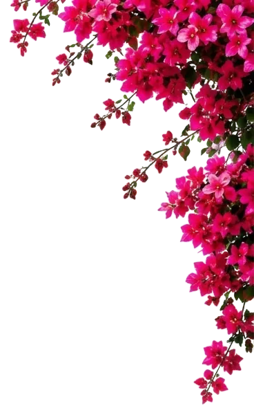
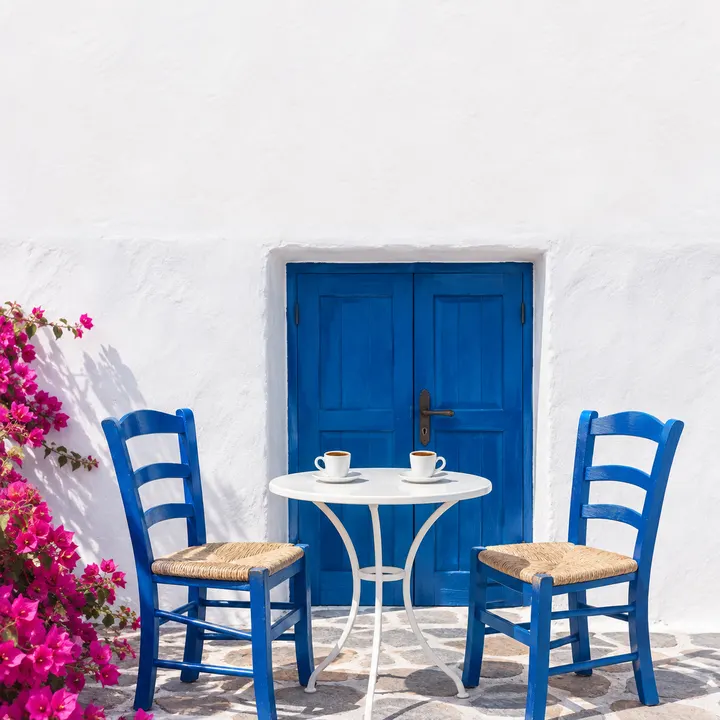

<!DOCTYPE html>
<html lang="ru">
<head>
<meta charset="utf-8">
<meta name="viewport" content="width=device-width, initial-scale=1, viewport-fit=cover">
<meta name="theme-color" content="#FCFCFA">
<meta name="apple-mobile-web-app-capable" content="yes">
<meta name="apple-mobile-web-app-title" content="Santorini English">
<title>Santorini English</title>
<link rel="icon" href="assets/img/icon.png">
<link rel="apple-touch-icon" href="assets/img/apple-touch-icon.png">
<link rel="preconnect" href="https://fonts.googleapis.com">
<link rel="preconnect" href="https://fonts.gstatic.com" crossorigin>
<link href="https://fonts.googleapis.com/css2?family=Commissioner:wght@400;500;600;700;800&display=swap" rel="stylesheet">
<style>
:root{
  /* tokens shared with the restaurant's menu app */
  --wash:#FCFCFA; --pebble:#E7E4DE; --plaster:#F1EFEB; --plaster-2:#E4E8EC;
  --ink:#0C2A55; --ink-2:#4A5C78; --ink-3:#56677F;
  --aegean:#1550A8; --aegean-deep:#0D3A7E; --sea:#E8EFFA; --sea-2:#C7D6F0;
  --bloom:#C8246B; --bloom-tint:#FBE6EF; --plate:#24807E;
  --terra:#B4451C; --terra-tint:#FBEAE2; --tread:#F3E6DC; --riser:#DDBBA8;
  --shadow: 10px 14px 22px -12px rgba(12,42,85,.30), 2px 3px 5px -2px rgba(12,42,85,.10);
  --shadow-lo: 4px 6px 10px -6px rgba(12,42,85,.30);
  --r:20px;
  --safe-t: env(safe-area-inset-top, 0px); --safe-b: env(safe-area-inset-bottom, 0px);
  --ease-out: cubic-bezier(.23,1,.32,1); --ease-io: cubic-bezier(.77,0,.175,1); --ease-drawer: cubic-bezier(.32,.72,0,1);
  --font: 'Commissioner', -apple-system, BlinkMacSystemFont, "SF Pro Text", "Segoe UI", Roboto, sans-serif;
}
*{box-sizing:border-box;-webkit-tap-highlight-color:transparent}
html,body{margin:0;height:100%;background:var(--wash);color:var(--ink)}
@media (min-width:600px){body{background:#EAF0F7 url(assets/img/sea.webp) center/cover fixed}body::before{content:"";position:fixed;inset:0;background:rgba(252,252,250,.55);backdrop-filter:blur(14px);-webkit-backdrop-filter:blur(14px)}#app{box-shadow:0 0 0 1px var(--pebble),0 30px 80px -30px rgba(12,42,85,.35)}}
body{font:17px/1.42 var(--font);-webkit-font-smoothing:antialiased;overscroll-behavior:none;font-variant-numeric:tabular-nums}
::selection{background:var(--sea-2);color:var(--ink)}
input,textarea,select{caret-color:var(--aegean);font:inherit}
button{font:inherit;color:inherit;border:0;background:none;cursor:pointer;touch-action:manipulation}
:focus-visible{outline:3px solid var(--aegean);outline-offset:2px;border-radius:10px}
h1,h2,h3{margin:0;letter-spacing:-.015em;text-wrap:balance}
img{display:block;max-width:100%}
svg{display:block}
.hide{display:none!important}
.sr{position:absolute;width:1px;height:1px;overflow:hidden;clip:rect(0 0 0 0)}
/* every pressable answers the finger */
.btn,.o,.tile,.tab,.step,.scene,.dome,.chipbtn,.play,.mic,.reroll{transition:transform 160ms var(--ease-out),background-color 160ms ease,border-color 160ms ease,color 160ms ease}
.btn:active,.o:active,.tile:active,.step:active,.scene:active,.dome:active,.chipbtn:active,.play:active,.mic:active,.reroll:active{transform:scale(.97)}
.step:active{transform:translateX(var(--x,0)) scale(.97)}

/* ---------- shell ---------- */
#app{position:fixed;inset:0;display:flex;flex-direction:column;max-width:560px;margin:0 auto;background:var(--wash)}
.top{position:relative;flex:none;display:flex;align-items:center;gap:6px;padding:calc(var(--safe-t) + 8px) 12px 6px;background:var(--wash)}
.top .logo{width:92px;height:34px;flex:none;background:url(assets/img/logo-word.webp) left center/contain no-repeat;margin-right:auto}
.rank{min-width:0;display:flex;align-items:center;gap:6px;padding:2px 10px 2px 2px;border-radius:999px;background:var(--plaster)}
.rank img,.rank .badge{width:30px;height:30px;object-fit:contain;flex:none}
.rank .badge svg,.ranks .badge svg{width:100%;height:100%}
.rank b{font-size:14px;font-weight:800;white-space:nowrap}
@media (max-width:420px){.rank b{display:none}.rank{padding:2px}}
.chip{display:flex;align-items:center;gap:4px;font-weight:800;font-size:15px;padding:6px 8px;border-radius:999px;background:var(--plaster)}
.chip svg{width:18px;height:18px}
.chip.streak{color:var(--terra)} .chip.hearts{color:var(--bloom)} .chip.xp{color:var(--aegean)} .chip.off{color:var(--ink-3)}
.meander{height:12px;flex:none;background:var(--wash) url("data:image/svg+xml,%3Csvg xmlns='http://www.w3.org/2000/svg' width='24' height='12'%3E%3Cpath d='M0 11h4V1h12v8H8V5h4M16 11h8' fill='none' stroke='%231550A8' stroke-opacity='.38' stroke-width='1.3' stroke-linecap='square'/%3E%3C/svg%3E") repeat-x left center/24px 12px}
main{flex:1;overflow-y:auto;-webkit-overflow-scrolling:touch;scrollbar-width:none}
main::-webkit-scrollbar{display:none}
.tabs{display:flex;background:var(--wash);border-top:1px solid var(--pebble);padding:6px 6px calc(var(--safe-b) + 6px);flex:none}
.tab{position:relative;flex:1;display:flex;flex-direction:column;align-items:center;gap:3px;padding:6px 0;min-height:52px;font-size:12px;font-weight:600;color:var(--ink-3);border-radius:12px}
.tab svg{width:26px;height:26px}
.tab[aria-current="page"]{color:var(--aegean)}
.tab .dot{position:absolute;top:0;left:50%;margin-left:6px;min-width:18px;height:18px;padding:0 5px;border-radius:9px;background:var(--terra);color:#fff;font-size:11px;font-weight:800;line-height:18px}

/* ---------- path: the stair alley ---------- */
.path{display:flex;flex-direction:column;padding:0 0 10px}
.flight{display:flex;flex-direction:column;align-items:center;gap:14px;padding:18px 0 26px;position:relative}
.flight::before{content:"";position:absolute;left:9%;right:9%;top:240px;bottom:6px;border-radius:26px 26px 120px 120px;background:#F4F4F1 url("data:image/svg+xml,%3Csvg xmlns='http://www.w3.org/2000/svg' width='160' height='160'%3E%3Cfilter id='n'%3E%3CfeTurbulence type='fractalNoise' baseFrequency='.9' numOctaves='2' stitchTiles='stitch'/%3E%3CfeColorMatrix values='0 0 0 0 .5 0 0 0 0 .55 0 0 0 0 .6 0 0 0 .08 0'/%3E%3C/filter%3E%3Crect width='160' height='160' filter='url(%23n)'/%3E%3C/svg%3E");z-index:0}
.flight>*{position:relative;z-index:1}
.sign{align-self:stretch;margin:0 14px 4px;border-radius:var(--r);overflow:hidden;position:relative;background:#fff;box-shadow:var(--shadow)}
.sign .phwrap{position:relative;overflow:hidden;aspect-ratio:3/2}
.sign .ph{position:absolute;left:0;right:0;top:-12px;width:100%;height:calc(100% + 24px);object-fit:cover;background:var(--sea);will-change:transform}
.sign .tx{display:flex;align-items:center;gap:12px;padding:12px 14px}
.sign .n{width:38px;height:38px;border-radius:12px;background:var(--aegean);display:grid;place-items:center;font-weight:800;color:#fff;flex:none}
.sign h2{font-size:22px;font-weight:800;line-height:1.05}
.sign p{margin:2px 0 0;font-size:14px;color:var(--ink-2)}
.sign .count{margin-left:auto;font-weight:800;font-size:15px;color:var(--aegean);background:var(--sea);padding:4px 10px;border-radius:999px}
.step{position:relative;width:min(64%,230px);min-height:70px;display:flex;align-items:center;gap:12px;padding:10px 14px 20px;text-align:left;border-radius:16px 16px 14px 14px;
  background:linear-gradient(to top,#E3E9F1 12px,#FBFBF9 12px);color:var(--ink-3);transform:translateX(var(--x,0));outline:1.5px dashed var(--sea-2);outline-offset:-1.5px}
.conn{width:96px;height:30px;margin:-8px 0;transform:translateX(var(--x,0)) scaleX(var(--f,1))}
.step .ic{flex:none;width:38px;height:38px;border-radius:12px;display:grid;place-items:center;background:var(--sea);color:var(--aegean)}
.step .ic svg{width:22px;height:22px}
.step .t{font-size:15px;font-weight:700;line-height:1.2}
.step .t small{display:block;font-size:12px;font-weight:600;margin-top:2px}
.step.done,.step.now{outline:0}
.step.done{background:linear-gradient(to top,#D8E1EC 12px,#fff 12px);color:var(--ink);box-shadow:var(--shadow)}
.step.done .ic{background:var(--sea);color:var(--aegean)}
.step.now{background:linear-gradient(to top,var(--aegean-deep) 12px,var(--aegean) 12px);color:#fff;box-shadow:0 14px 26px -12px rgba(13,58,126,.7)}
.step.now .ic{background:rgba(255,255,255,.18);color:#fff}
.step.now small{font-weight:800}
.step.menu .ic{color:var(--plate)}
.step.paint::after{content:"";position:absolute;inset:0;border-radius:16px;background:#fff;animation:paint 700ms var(--ease-out) both;pointer-events:none}
@keyframes paint{from{clip-path:inset(0 100% 0 0);opacity:1}70%{clip-path:inset(0 0 0 0);opacity:1}to{clip-path:inset(0 0 0 0);opacity:0}}
.dome{position:relative;display:flex;flex-direction:column;align-items:center;gap:2px;padding:4px 10px 8px;border-radius:var(--r);text-align:center}
.dome img{width:150px;height:120px;object-fit:contain;mix-blend-mode:multiply}
.dome .t{font-size:15px;font-weight:800;max-width:230px}
.dome .t small{display:block;font-weight:600;font-size:13px;color:var(--ink-2)}
.dome .now{color:var(--aegean);font-weight:800}
.dome.lock img{filter:grayscale(1);opacity:.4}
.dome.lock .t{color:var(--ink-3)}
.dome .ok{position:absolute;top:8px;right:28px;width:30px;height:30px;border-radius:50%;background:var(--aegean);color:#fff;display:grid;place-items:center;box-shadow:var(--shadow-lo)}
.dome .ok svg{width:18px;height:18px}
.hero{position:relative;height:440px;overflow:hidden;background:#CFE0F3}
.hero .l{position:absolute;pointer-events:none;will-change:transform}
.hero .sea{top:-220px;left:0;right:0;bottom:0;background:url(assets/img/sea.webp) center 30%/cover}
.hero .stairs{left:0;bottom:-2px;width:100%}
.hero .plant{right:-18px;top:-10px;width:46%;max-width:220px}
.hero .domes{left:50%;top:46px;width:150px;margin-left:-75px;mix-blend-mode:multiply;opacity:.95}
.hero .wm{position:absolute;left:0;right:0;top:148px;text-align:center}
.hero .wm i{display:block;width:210px;height:80px;margin:0 auto;background:url(assets/img/logo-word.webp) center/contain no-repeat}
.hero .wm span{display:block;font-weight:800;letter-spacing:.32em;font-size:13px;color:var(--aegean);margin-top:2px;text-transform:uppercase}
.cta{position:relative;z-index:2;margin:-40px 14px 0;width:calc(100% - 28px);display:flex;align-items:center;gap:10px;padding:10px 10px 10px 14px;border-radius:20px;background:rgba(255,255,255,.94);backdrop-filter:blur(8px);-webkit-backdrop-filter:blur(8px);box-shadow:var(--shadow);text-align:left}
.cta div{flex:1;min-width:0}
.cta b{display:block;font-size:17px;line-height:1.2}
.cta small{display:block;font-size:13px;color:var(--ink-2)}
.cta .btn{width:auto;min-height:46px;padding:8px 16px;font-size:15px;flex:none}
.finale{margin:6px 14px 20px;padding:22px 16px;border-radius:var(--r);background:#fff;box-shadow:var(--shadow-lo);text-align:center}
.finale img{width:120px;height:120px;object-fit:contain;margin:0 auto 6px}
.finale b{display:block;font-size:18px} .finale span{font-size:14px;color:var(--ink-2)}
.hello{margin:0 14px 18px;padding:14px 16px;border-radius:var(--r);background:#fff;box-shadow:var(--shadow-lo);display:flex;gap:12px;align-items:center}
.hello p{margin:0;font-size:15px;color:var(--ink-2)} .hello b{color:var(--ink)}
.hello{flex-wrap:wrap}.hello-pic{width:100%;max-height:150px;object-fit:contain;margin-bottom:4px}
.winpic{position:relative;margin:6px auto 22px;max-width:320px}.winpic img{width:100%;height:auto;max-height:210px;object-fit:contain}.winpic .bigstamp{top:auto;left:auto;right:-4px;bottom:-6px;transform:rotate(-8deg);animation-name:stamp2;background:rgba(252,252,250,.9)}
@keyframes stamp2{from{transform:rotate(-8deg) scale(1.3);opacity:0}to{transform:rotate(-8deg) scale(1);opacity:1}}

/* ---------- panels ---------- */
.pane{padding:20px 16px 28px}
.pane h1{font-size:28px;font-weight:800}
.lead{color:var(--ink-2);margin:6px 0 18px}
.card{background:#fff;border-radius:var(--r);padding:16px;box-shadow:var(--shadow);margin-bottom:14px}
.card h3{font-size:18px;font-weight:800;margin-bottom:6px}
.btn{display:flex;align-items:center;justify-content:center;gap:8px;width:100%;min-height:54px;padding:12px 18px;border-radius:16px;font-weight:800;font-size:17px;
  background:var(--aegean);color:#fff;box-shadow:0 8px 18px -10px rgba(13,58,126,.8);text-decoration:none}
.btn:active{background:var(--aegean-deep)}
.btn:disabled{background:var(--plaster-2);color:var(--ink-3);box-shadow:none}
.btn svg{flex:none;width:22px;height:22px}
.btn.ghost{background:var(--plaster);color:var(--ink);box-shadow:none}
.btn.terra{background:var(--terra)}
.btn.small{min-height:44px;font-size:15px;width:auto;padding:8px 14px;border-radius:12px}
.row{display:flex;gap:10px}
.mist{display:flex;gap:12px;align-items:flex-start;padding:14px 0;border-top:1px solid var(--pebble)}
.mist:first-child{border-top:0;padding-top:2px}
.mist .x{flex:1;min-width:0}
.mist s{color:var(--terra);text-decoration-thickness:1.5px}
.mist .ok{font-weight:700;margin-top:2px}
.mist .ru{font-size:14px;color:var(--ink-2);margin-top:2px}
.stamp{flex:none;font-size:11px;font-weight:900;letter-spacing:.08em;padding:4px 7px;border:2px solid currentColor;border-radius:7px;transform:rotate(-6deg);margin-top:4px;text-transform:uppercase}
.stamp.todo{color:var(--terra)} .stamp.fixed{color:var(--aegean)}
.seg{display:flex;background:var(--plaster);border-radius:14px;padding:4px;gap:4px;margin-bottom:16px}
.seg button{flex:1;min-height:44px;border-radius:10px;font-weight:700;font-size:15px;color:var(--ink-2)}
.seg button[aria-pressed="true"]{background:#fff;color:var(--ink);box-shadow:var(--shadow-lo)}
.cats{display:flex;gap:8px;overflow-x:auto;scrollbar-width:none;margin:0 -16px 14px;padding:2px 16px 6px}
.cats::-webkit-scrollbar{display:none}
.chipbtn{flex:none;min-height:44px;padding:8px 14px;border-radius:999px;border:1.5px solid var(--pebble);background:#fff;font-weight:700;font-size:15px;color:var(--ink-2)}
.chipbtn[aria-pressed="true"]{background:var(--aegean);border-color:var(--aegean);color:#fff}
.scene{display:flex;flex-direction:column;align-items:flex-start;gap:2px;width:100%;text-align:left;padding:13px 14px;border-radius:16px;background:#fff;box-shadow:var(--shadow-lo);margin-bottom:10px;min-height:56px}
.scene .t{font-weight:700;font-size:16px;line-height:1.3}
.scene .ru{font-size:13px;color:var(--ink-2)}
.scene .rv{font-size:13px;color:var(--ink-2);font-style:italic}
.tag{display:inline-block;font-size:11px;font-weight:800;color:var(--bloom);background:var(--bloom-tint);border-radius:6px;padding:2px 6px;margin-bottom:3px}
.scene[aria-pressed="true"]{box-shadow:inset 0 0 0 2.5px var(--aegean),var(--shadow-lo)}
.persona{display:grid;gap:10px}
.talkav{width:104px;height:104px;border-radius:28px;background:#fff;box-shadow:var(--shadow-lo);flex:none;overflow:hidden}.talkav img{width:100%;height:100%;object-fit:contain}
.prow{display:flex;align-items:center;gap:10px}
.prow .k{width:96px;flex:none;font-size:14px;color:var(--ink-2)}
.prow .v{flex:1;font-weight:700}
.reroll{width:44px;height:44px;border-radius:12px;background:var(--sea);color:var(--aegean);display:grid;place-items:center;flex:none}
.reroll svg{width:20px;height:20px}
.speeds{display:flex;gap:6px;flex-wrap:wrap}
.speeds .chipbtn{min-height:44px;padding:6px 11px;font-size:14px}
.prompt{white-space:pre-wrap;font-size:14px;line-height:1.45;background:var(--plaster);border-radius:14px;padding:14px;color:var(--ink);max-height:200px;overflow:auto;margin:12px 0}
img.banner{display:block;width:100%;height:auto;border-radius:var(--r);margin:-4px 0 14px;box-shadow:var(--shadow-lo)}
ol.how{margin:0 0 6px;padding-left:22px;color:var(--ink-2)} ol.how li{margin:4px 0}
.stat{display:flex;margin:16px 0 18px;padding:12px 0;border-top:1px solid var(--pebble);border-bottom:1px solid var(--pebble)}
.stat div{flex:1;padding:0 8px;border-left:1px solid var(--pebble)}
.stat div:first-child{border-left:0;padding-left:0}
.stat b{display:block;font-size:22px;font-weight:800}
.stat span{font-size:12px;color:var(--ink-2);white-space:nowrap}
.bar{height:12px;border-radius:6px;background:var(--plaster-2);overflow:hidden}
.bar i{display:block;height:100%;background:var(--aegean);border-radius:6px;transition:width 300ms var(--ease-out)}
.ranks{list-style:none;margin:6px 0 0;padding:0}
.ranks li{display:flex;align-items:center;gap:10px;padding:8px 0;border-top:1px solid var(--pebble);font-size:15px}
.ranks li img,.ranks li .badge{width:46px;height:46px;object-fit:contain}
.ranks li span:last-child{margin-left:auto}
.ranks li.me{font-weight:800;color:var(--aegean)}
.ranks li.next{opacity:.6}
.empty{text-align:center}
.empty img{width:100%;height:auto;border-radius:var(--r);margin-bottom:12px}
select.in{width:100%;min-height:48px;border-radius:12px;border:1.5px solid var(--pebble);padding:0 12px;background:#fff;color:var(--ink);font-size:16px}
.note-ok{font-size:14px;color:var(--plate);font-weight:700;margin-top:8px}
.import{position:fixed;inset:0;z-index:40;background:rgba(12,42,85,.45);display:grid;place-items:end center;padding:0}
.import .card{width:100%;max-width:560px;margin:0;border-radius:24px 24px 0 0;padding:22px 16px calc(var(--safe-b) + 16px)}

/* ---------- lesson ---------- */
#lesson{position:fixed;inset:0;background:var(--wash);z-index:20;display:flex;flex-direction:column;max-width:560px;margin:0 auto}
.lt{display:flex;align-items:center;gap:12px;padding:calc(var(--safe-t) + 10px) 16px 8px}
.lt .close{width:44px;height:44px;display:grid;place-items:center;border-radius:12px;color:var(--ink-2)}
.lt .close svg{width:26px;height:26px}
.lt .bar{flex:1;height:14px}
.lt .chip{background:var(--plaster)}
.lbody{flex:1;overflow-y:auto;padding:10px 16px 20px;display:flex;flex-direction:column}
.lbody>*{animation:rise 200ms var(--ease-out) both}
.lbody>*:nth-child(2){animation-delay:30ms}.lbody>*:nth-child(3){animation-delay:60ms}
@keyframes rise{from{opacity:0;transform:translateY(8px)}to{opacity:1;transform:none}}
.opts .o{animation:rise 200ms var(--ease-out) both}
.opts .o:nth-child(2){animation-delay:30ms}.opts .o:nth-child(3){animation-delay:60ms}.opts .o:nth-child(4){animation-delay:90ms}
.kind{font-size:15px;font-weight:700;color:var(--ink-2);margin:6px 0 12px;line-height:1.3}
.q{font-size:22px;font-weight:700;line-height:1.3;margin-bottom:18px}
.q .ru{display:block;font-size:16px;font-weight:600;color:var(--ink-2);margin-top:6px}
.q>.ru:first-child{margin-top:0}
.opts{display:flex;flex-direction:column;gap:10px}
.o{width:100%;min-height:58px;padding:14px 16px;text-align:left;border-radius:16px;background:#fff;border:2px solid var(--pebble);font-size:17px;font-weight:600;line-height:1.3}
.o[aria-pressed="true"]{border-color:var(--aegean);background:var(--sea)}
.o.right{border-color:var(--aegean);background:var(--sea)}
.o.wrong{border-color:var(--terra);background:var(--terra-tint);animation:shake 260ms var(--ease-out)}
@keyframes shake{25%{transform:translateX(-5px)}50%{transform:translateX(4px)}75%{transform:translateX(-2px)}}
.speak{display:flex;gap:10px;align-items:center;margin-bottom:18px}
.play{width:84px;height:84px;border-radius:24px;background:var(--aegean);color:#fff;display:grid;place-items:center;box-shadow:0 12px 22px -12px rgba(13,58,126,.85)}
.play svg{width:38px;height:38px}
.play.slow{width:58px;height:58px;border-radius:18px;background:var(--sea);color:var(--aegean);box-shadow:none;font-weight:800;font-size:14px}
.bubble{display:flex;gap:10px;align-items:flex-end;margin-bottom:18px}
.av{flex:none;width:64px;height:64px;border-radius:20px;background:#fff;color:var(--terra);display:grid;place-items:center;font-weight:900;overflow:hidden;box-shadow:var(--shadow-lo)}
.av img{width:100%;height:100%;object-fit:contain}
.say{position:relative;flex:1;background:#fff;border-radius:18px 18px 18px 6px;padding:12px 14px;box-shadow:var(--shadow);font-size:19px;font-weight:700}
.say small{display:block;margin-top:6px;font-size:13px;font-weight:500;color:var(--ink-2)}
.say{padding-right:54px!important}
.say .mini{position:absolute;right:6px;top:8px;width:44px;height:44px;border-radius:12px;background:var(--aegean);color:#fff;display:grid;place-items:center}
.say .mini svg{width:20px;height:20px}
.who{font-size:14px;font-weight:700;color:var(--terra);margin:0 0 4px 74px}
.note{background:#fff;border-radius:16px;padding:16px;box-shadow:var(--shadow);font-size:17px;line-height:1.5;margin-bottom:14px}
.note .lbl{font-size:14px;font-weight:700;color:var(--ink-2);margin-bottom:4px}
.dish{border-radius:20px;overflow:hidden;background:#fff;box-shadow:var(--shadow);margin-bottom:16px}
.dish img{width:100%;height:210px;object-fit:cover}
.dish .nm{padding:10px 14px 12px;font-weight:800;font-size:19px}
.slots{display:flex;flex-wrap:wrap;gap:8px;min-height:116px;padding:10px 0;border-bottom:2px solid var(--pebble);margin-bottom:18px;align-content:flex-start;
  background-image:linear-gradient(to bottom,transparent 49px,var(--pebble) 49px,var(--pebble) 50px,transparent 50px);background-size:100% 54px}
.bank{display:flex;flex-wrap:wrap;gap:8px;justify-content:center}
.tile{min-height:46px;padding:9px 14px;border-radius:12px;background:#fff;border:2px solid var(--pebble);font-size:17px;font-weight:600;box-shadow:0 3px 6px -4px rgba(12,42,85,.3)}
.tile.used{visibility:hidden}
.tile.in{border-color:var(--sea-2);background:var(--sea)}
.gapline{font-size:22px;font-weight:700;line-height:1.5;margin-bottom:6px}
.gapline u{display:inline-block;min-width:90px;border-bottom:3px solid var(--aegean);text-decoration:none;color:var(--aegean);text-align:center}
.match{display:grid;grid-template-columns:1fr 1fr;gap:10px}
.match .o{text-align:center;min-height:56px;padding:10px}
.match .o.gone{opacity:.35;border-color:var(--sea-2);background:var(--sea);pointer-events:none;transition:opacity 200ms var(--ease-out)}
textarea.in{width:100%;min-height:110px;padding:14px;border-radius:16px;border:2px solid var(--pebble);font-size:18px;background:#fff;color:var(--ink);resize:none}
textarea.in:focus{outline:none;border-color:var(--aegean)}
.hint{display:flex;gap:10px;align-items:flex-start;font-size:15px;color:var(--ink-2);background:var(--plaster);border-radius:14px;padding:12px;margin-top:12px}
.hint svg{flex:none;width:22px;height:22px;color:var(--aegean)}
.mic{width:100%;min-height:64px;border-radius:18px;background:var(--aegean);color:#fff;font-weight:800;display:flex;align-items:center;justify-content:center;gap:10px}
.mic svg{width:26px;height:26px}
.mic.on{background:var(--terra);animation:pulse 1.2s ease-in-out infinite}
@keyframes pulse{50%{box-shadow:0 0 0 10px rgba(180,69,28,.15)}}
.heard{margin-top:12px;font-size:17px;min-height:24px;color:var(--ink-2)}
.skip{margin-top:10px;color:var(--ink-2);font-weight:700;font-size:15px;min-height:44px;width:100%}
.lfoot{padding:12px 16px calc(var(--safe-b) + 14px);border-top:1px solid var(--pebble);background:var(--wash)}
.sheet{position:fixed;left:0;right:0;bottom:0;max-width:560px;margin:0 auto;padding:18px 16px calc(var(--safe-b) + 14px);border-radius:24px 24px 0 0;z-index:30;
  transform:translateY(105%);transition:transform 200ms var(--ease-out)}
.sheet.show{transform:none;transition:transform 320ms var(--ease-drawer)}
.sheet.ok{background:var(--sea)} .sheet.bad{background:var(--terra-tint)}
.sheet h3{font-size:22px;font-weight:800;display:flex;align-items:center;gap:8px}
.sheet h3 svg{width:28px;height:28px}
.sheet.ok h3{color:var(--aegean-deep)} .sheet.bad h3{color:var(--terra)}
.sheet .ans{font-size:18px;font-weight:700;margin:8px 0 2px}
.sheet .why{font-size:15px;color:var(--ink-2);margin:4px 0 14px}
.sheet.bad .btn{background:var(--terra)}
/* end screen */
.end{position:relative;flex:1;overflow-y:auto;overflow-x:hidden;padding:calc(var(--safe-t) + 30px) 16px 24px;text-align:center}
.end .plant{position:absolute;right:0;top:-20px;width:150px;pointer-events:none;animation:sway 500ms var(--ease-out) both}
@keyframes sway{from{transform:translateY(-30px) rotate(4deg);opacity:0}to{transform:none;opacity:1}}
.slabwrap{position:relative}
.slab{position:relative;width:220px;height:86px;margin:20px auto 34px;border-radius:22px;background:var(--plaster-2);overflow:hidden;box-shadow:var(--shadow)}
.slab::before{content:"";position:absolute;inset:0;background:#fff;animation:wash 450ms 100ms var(--ease-out) both}
@keyframes wash{from{clip-path:inset(0 100% 0 0)}to{clip-path:inset(0 0 0 0)}}
.slab::after{content:"";position:absolute;left:10px;right:10px;bottom:0;height:9px;background:rgba(12,42,85,.08);border-radius:0 0 16px 16px}
.bigstamp{position:absolute;left:50%;top:50%;font-size:20px;font-weight:900;letter-spacing:.1em;text-transform:uppercase;color:var(--aegean);border:3px solid var(--aegean);border-radius:10px;padding:6px 12px;
  transform:translate(-50%,-50%) rotate(-8deg);animation:stamp 320ms 400ms var(--ease-out) both;z-index:2}
@keyframes stamp{from{transform:translate(-50%,-50%) rotate(-8deg) scale(1.3);opacity:0}to{transform:translate(-50%,-50%) rotate(-8deg) scale(1);opacity:1}}
.end h1{font-size:30px;font-weight:800}
.end h1 em{font-style:normal;color:var(--bloom)}
.end .sub{margin:6px 0 0;font-size:18px;font-weight:700}
.end .sub small{display:block;font-size:14px;font-weight:500;color:var(--ink-2)}
.end .stat div{text-align:center;padding:0 4px}
.end .card{text-align:left}
.petal{position:absolute;left:50%;top:50%;width:18px;height:18px;margin:-9px;color:var(--bloom);animation:petal 1.1s 450ms var(--ease-out) both;pointer-events:none}
.petal svg{width:100%;height:100%}
@keyframes petal{from{transform:translate(0,0) rotate(0) scale(.5);opacity:0}15%{opacity:1}to{transform:translate(var(--dx),var(--dy)) rotate(var(--r)) scale(1);opacity:0}}
@media (prefers-reduced-motion:reduce){*,*::before,*::after{animation:none!important;transition:none!important}.slab::before{clip-path:none}}
</style>
</head>
<body>
<div id="app">
  <header class="top" id="top"><div class="logo" role="img" aria-label="Santorini"></div><div id="bar" style="display:contents"></div></header>
  <div class="meander" aria-hidden="true"></div>
  <main id="main"></main>
  <nav class="tabs" id="tabs" aria-label="Разделы"></nav>
</div>
<div id="lesson" class="hide" role="dialog" aria-modal="true" aria-label="Урок"></div>
<div class="sheet" id="sheet" aria-live="polite"></div>
<div id="overlay"></div>
<script>
// Lesson content. p: [english, russian, key word for the gap task]
// r: replies {s: what they say, sr: перевод, ok: best answer, bad: [two weaker answers], why: почему}
// f: fixes {w: wrong, ok: right, alt: another wrong option, why}
// rd: reading {t: text, q: question (ru), ok, bad: [2]}
// w: word pairs [en, ru]
// talk: scene for the ChatGPT teacher
const WORLDS = [
{
  id: "guests", name: "Гости", en: "Guests",
  lessons: [
  {
    id: "g1", title: "Встреча и бронь", en: "Welcome & booking",
    w: [["reservation","бронь"],["table","столик"],["inside","внутри"],["outside","снаружи"],["name","имя"]],
    p: [
      ["Good evening! Welcome to Santorini.", "Добрый вечер! Добро пожаловать в Санторини.", "Welcome"],
      ["Do you have a reservation?", "У вас есть бронь?", "reservation"],
      ["What name is the reservation under?", "На чьё имя бронь?", "under"],
      ["A table for two?", "Столик на двоих?", "table"],
      ["Would you like to sit inside or outside?", "Хотите сесть внутри или снаружи?", "outside"],
      ["Please follow me.", "Пройдёмте за мной.", "follow"]
    ],
    r: [
      { s: "Hi, we don't have a booking. Do you have a table for four?", sr: "Здравствуйте, у нас нет брони. Есть столик на четверых?",
        ok: "No problem, let me check what we have.", bad: ["Yes, you're welcome.", "What time you have reservation?"],
        why: "Гость сказал, что брони нет. Сначала успокоить и пойти проверить." },
      { s: "Thank you so much!", sr: "Большое спасибо!",
        ok: "You're welcome! Enjoy your dinner.", bad: ["Please come in.", "Yes, thank you."],
        why: "«You're welcome» говорят только в ответ на «thank you»." }
    ],
    f: [{ w: "What time you have to reservation?", ok: "What time is your reservation?", alt: "What time you have reservation?",
          why: "В вопросе нужен глагол «is»: What time is your reservation?" }],
    rd: { t: "Booking: Mr. Novak, 4 people, 7:30 pm, terrace, birthday — bring a candle with dessert.",
          q: "Что нужно сделать в конце ужина?", ok: "Принести десерт со свечой", bad: ["Пересадить гостей внутрь", "Позвонить мистеру Новаку"] },
    talk: "a guest arrives without a reservation on a busy Friday evening"
  },
  {
    id: "g2", title: "Меню и аллергии", en: "Menu & allergies",
    w: [["dish","блюдо"],["sold out","закончилось"],["nuts","орехи"],["chef","шеф-повар"],["vegan","веганский"]],
    p: [
      ["I recommend our moussaka.", "Рекомендую нашу мусаку.", "recommend"],
      ["The halloumi comes with honey and lemon.", "Халлуми подаётся с мёдом и лимоном.", "comes"],
      ["Do you have any allergies?", "У вас есть аллергия?", "allergies"],
      ["I'll check with the chef.", "Я уточню у шефа.", "check"],
      ["The walnut baklava contains nuts.", "В ореховой баклаве есть орехи.", "contains"],
      ["The grilled octopus is sold out tonight.", "Осьминог на гриле сегодня закончился.", "sold"]
    ],
    r: [
      { s: "What do you recommend?", sr: "Что вы порекомендуете?",
        ok: "I recommend our moussaka. It's very popular.", bad: ["I recommend to try moussaka.", "Moussaka is at the menu."],
        why: "После recommend не ставят «to»: I recommend our…, I recommend trying…" },
      { s: "My son is allergic to nuts. Is the baklava okay?", sr: "У сына аллергия на орехи. Баклава подойдёт?",
        ok: "I'm sorry, the baklava contains walnuts. Let me check with the chef what's safe.", bad: ["I think it's okay.", "Yes, no nuts, maybe."],
        why: "Про аллергию нельзя угадывать. Сказать честно и уточнить у шефа." }
    ],
    f: [{ w: "This dish is at the menu.", ok: "This dish is on the menu.", alt: "This dish is in the menu.",
          why: "По-английски говорят «on the menu»." },
        { w: "I recommend to try the octopus.", ok: "I recommend trying the octopus.", alt: "I recommend try the octopus.",
          why: "После recommend идёт форма с -ing или существительное." }],
    rd: { t: "Chef's note: grilled octopus is sold out tonight. The walnut baklava contains walnuts. Pita Melitzana (eggplant dip) is vegan.",
          q: "Что можно предложить веганам?", ok: "Питу мелидзану", bad: ["Ореховую баклаву", "Осьминога на гриле"] },
    dishes: 2,
    talk: "a guest asks for recommendations and has a nut allergy"
  },
  {
    id: "g2m", title: "Наше меню", en: "Our menu", menu: true,
    talk: "a guest asks you to explain several Greek dishes from our menu and to recommend one"
  },
  {
    id: "g3", title: "Жалобы", en: "Complaints",
    w: [["cold","холодный"],["replace","заменить"],["discount","скидка"],["sorry","извините"],["wrong","не тот"]],
    p: [
      ["I'm so sorry about that.", "Мне очень жаль, простите.", "sorry"],
      ["I'll replace your dish right away.", "Я сразу заменю вам блюдо.", "replace"],
      ["Let me see what I can do.", "Сейчас посмотрю, что можно сделать.", "see"],
      ["I'll tell the waiter.", "Я скажу официанту.", "tell"],
      ["Can I offer you a free dessert?", "Могу предложить десерт за наш счёт?", "offer"],
      ["Thank you for telling us.", "Спасибо, что сказали.", "telling"]
    ],
    r: [
      { s: "Excuse me, my steak is cold.", sr: "Простите, мой стейк холодный.",
        ok: "I'm so sorry. I'll replace it right away.", bad: ["I tell the waiter.", "Okay. To place your dish."],
        why: "Сначала извиниться, потом пообещать с «I'll»." },
      { s: "We've been waiting for forty minutes!", sr: "Мы ждём уже сорок минут!",
        ok: "I'm really sorry. Let me check your order now.", bad: ["Kitchen is busy.", "Wait please, is normal."],
        why: "Не оправдываться. Извиниться и сразу действовать." }
    ],
    f: [{ w: "I tell the waiter.", ok: "I'll tell the waiter.", alt: "I telling the waiter.",
          why: "Когда обещаешь что-то сделать, говори «I'll»." },
        { w: "I will place your dish.", ok: "I will replace your dish.", alt: "I will change you dish.",
          why: "Заменить — replace. Place значит «положить, поставить»." }],
    rd: { t: "Review: \"The food was late and cold, but the manager apologised, replaced my dish and gave us dessert. We'll come back!\"",
          q: "Почему гость вернётся?", ok: "Менеджер извинился и всё исправил", bad: ["Еда была горячей", "Ужин был бесплатным"] },
    talk: "a guest complains that the food is cold and they waited too long"
  },
  {
    id: "g4", title: "Счёт и такси", en: "Bill & taxi",
    w: [["bill","счёт"],["cash","наличные"],["receipt","чек"],["service charge","сервисный сбор"],["tax","налог"]],
    p: [
      ["You can pay however you like.", "Можно платить как вам удобно.", "however"],
      ["There is no extra tax or service charge.", "Сверху нет налога и сервисного сбора.", "extra"],
      ["Would you like to split the bill?", "Хотите разделить счёт?", "split"],
      ["Which hotel are you staying at?", "В каком отеле вы живёте?", "staying"],
      ["Would you like me to call a taxi?", "Вызвать вам такси?", "call"],
      ["The taxi will be here in ten minutes.", "Такси будет через десять минут.", "here"]
    ],
    r: [
      { s: "Can I pay by card?", sr: "Можно оплатить картой?",
        ok: "Of course. I'll bring the card machine.", bad: ["Yes, pay how you want.", "Card is possible maybe."],
        why: "Коротко и с обещанием: I'll bring…" },
      { s: "Could you get us a taxi to our hotel?", sr: "Можете вызвать нам такси до отеля?",
        ok: "Sure. Which hotel are you staying at?", bad: ["In which hotel you stay?", "I ordered the taxi."],
        why: "Порядок слов в вопросе: Which hotel are you staying at?" }
    ],
    f: [{ w: "In which hotel you stay?", ok: "Which hotel are you staying at?", alt: "Which hotel you staying?",
          why: "В вопросе: вопросительное слово + are + you + staying." },
        { w: "I ordered the taxi in time you want.", ok: "I'll order a taxi for the time you need.", alt: "I order taxi in time you need.",
          why: "Обещание на будущее: I'll order…, и «for the time»." }],
    rd: { t: "Table 12: total 645,000 IDR. No extra tax or service charge. Guests asked for a taxi to Seminyak at 10 pm.",
          q: "Нужно ли добавлять налог и сервисный сбор к сумме?", ok: "Нет, сверху ничего не добавляют", bad: ["Да, 10% сверху", "Только налог"] },
    talk: "guests want to pay, ask about the service charge and need a taxi to their hotel"
  },
  {
    id: "g5", title: "Босс: ресторанный критик", en: "Boss: the food critic", boss: true,
    w: [["taken","занят"],["wait","ждать"],["sea view","вид на море"],["impressed","впечатлён"],["fully booked","всё занято"]],
    p: [
      ["I'm sorry, all our window tables are taken.", "Извините, все столики у окна заняты.", "taken"],
      ["I can offer you a table nearby.", "Могу предложить столик рядом.", "offer"],
      ["The wait is about fifteen minutes.", "Ждать примерно пятнадцать минут.", "wait"],
      ["I'll let you know when a table is free.", "Я скажу вам, когда освободится столик.", "know"],
      ["Sorry, could you say that again?", "Извините, повторите, пожалуйста.", "again"],
      ["Thank you for coming. Have a lovely evening!", "Спасибо, что пришли. Хорошего вечера!", "lovely"]
    ],
    r: [
      { s: "I want the table by the window. The one with the sea view.", sr: "Мне нужен столик у окна. Тот, с видом на море.",
        ok: "I'm sorry, those tables are taken. I can offer you one nearby with a good view.", bad: ["Tables are busy.", "No. Window is not possible."],
        why: "Вежливый отказ сразу с заменой." },
      { s: "Is the fish fresh? Where is it from?", sr: "Рыба свежая? Откуда она?",
        ok: "I'll check with the chef and come back to you.", bad: ["Yes, very fresh, I think.", "I don't know."],
        why: "Если не знаешь точно, пообещай уточнить." },
      { s: "Hmm. The wine is too warm.", sr: "Хм. Вино слишком тёплое.",
        ok: "I'm so sorry. I'll bring you a cold bottle right away.", bad: ["It's normal temperature.", "Okay, I tell the waiter."],
        why: "Извинение + действие с I'll." },
      { s: "I write about restaurants. Can I speak to the owner?", sr: "Я пишу о ресторанах. Могу поговорить с владельцем?",
        ok: "The owner isn't here tonight, but I'm the manager. How can I help?", bad: ["No owner.", "Owner is not here, sorry, bye."],
        why: "Ты менеджер, ты и решаешь вопросы гостя." },
      { s: "Well, I'm impressed. Thank you.", sr: "Что ж, я впечатлён. Спасибо.",
        ok: "Thank you! We hope to see you again soon.", bad: ["You're welcome, come in.", "Yes."],
        why: "Поблагодарить и пригласить снова." }
    ],
    f: [{ w: "Sorry, tables are busy.", ok: "Sorry, the tables are taken.", alt: "Sorry, tables is busy.",
          why: "О столиках говорят «taken», а не «busy»." }],
    rd: { t: "Food blog: \"Santorini was fully booked, but the manager found us a table in ten minutes and checked my allergy with the chef. Four stars.\"",
          q: "Что понравилось критику?", ok: "Быстро нашли столик и проверили аллергию", bad: ["Вид на море", "Бесплатное вино"] },
    talk: "a demanding food critic who wants the best table and asks many questions"
  }
  ]
},
{
  id: "team", name: "Команда", en: "Team",
  lessons: [
  {
    id: "t1", title: "Брифинг перед сменой", en: "Pre-shift briefing",
    w: [["shift","смена"],["special","блюдо дня"],["section","зона, секция"],["busy","загруженный"],["briefing","планёрка"]],
    p: [
      ["Good morning, team. Let's start the briefing.", "Доброе утро, команда. Начнём планёрку.", "briefing"],
      ["Tonight we are fully booked.", "Сегодня вечером всё забронировано.", "booked"],
      ["Today's special is grilled sea bass.", "Блюдо дня — сибас на гриле.", "special"],
      ["Made, you take the terrace section.", "Маде, ты берёшь террасу.", "section"],
      ["Please check all the tables before six.", "Проверьте все столики до шести.", "check"],
      ["Any questions?", "Есть вопросы?", "questions"]
    ],
    r: [
      { s: "Do we have a big group tonight?", sr: "У нас сегодня большая группа?",
        ok: "Yes, a group of twelve at eight o'clock on the terrace.", bad: ["Yes, big group is coming maybe.", "Group twelve eight terrace."],
        why: "Полный ответ: сколько, когда, где." },
      { s: "What is the special today?", sr: "Какое сегодня блюдо дня?",
        ok: "Today's special is grilled sea bass with lemon.", bad: ["Special is fish.", "Today special fish grill."],
        why: "Официант должен повторить это гостям, поэтому скажи полной фразой." }
    ],
    f: [{ w: "Tonight we fully booked.", ok: "Tonight we are fully booked.", alt: "Tonight we is fully booked.",
          why: "Нужен глагол «are»: we are fully booked." }],
    rd: { t: "Shift plan: 5 pm briefing. Wayan — bar. Made — terrace. Putu — inside. Group of 12 at 8 pm. Sea bass special.",
          q: "Кто работает на террасе?", ok: "Маде", bad: ["Ваян", "Путу"] },
    talk: "you lead a short pre-shift briefing for your waiters"
  },
  {
    id: "t2", title: "Задание официанту", en: "Tasks for waiters",
    w: [["set","накрыть"],["refill","долить"],["clear","убрать со стола"],["ask","спросить"],["napkins","салфетки"]],
    p: [
      ["Could you set table five, please?", "Накрой, пожалуйста, пятый столик.", "set"],
      ["Please refill their water.", "Долей им, пожалуйста, воды.", "refill"],
      ["Can you clear table eight?", "Можешь убрать восьмой столик?", "clear"],
      ["Ask them if they want dessert.", "Спроси, хотят ли они десерт.", "dessert"],
      ["We need more napkins at the bar.", "На баре нужно больше салфеток.", "napkins"],
      ["Thanks, good job!", "Спасибо, молодец!", "job"]
    ],
    r: [
      { s: "Table three is waiting for the bill.", sr: "Третий столик ждёт счёт.",
        ok: "Okay, I'll bring it to them now.", bad: ["Okay, I bring it.", "Yes, bill."],
        why: "Обещание действия: I'll bring it." },
      { s: "Sorry, I didn't understand. Which table?", sr: "Извините, я не понял. Какой столик?",
        ok: "Table five, by the window.", bad: ["Five! I said!", "You don't listen."],
        why: "Спокойно повтори и добавь подсказку." }
    ],
    f: [{ w: "Can you to clear table eight?", ok: "Can you clear table eight?", alt: "Can you clearing table eight?",
          why: "После can глагол без «to»." }],
    rd: { t: "Note for Putu: table 4 — no ice in drinks. Table 7 — birthday, bring the cake at 9. Table 9 — vegetarian.",
          q: "Что нужно сделать для седьмого столика?", ok: "Принести торт в девять", bad: ["Не класть лёд", "Подать вегетарианское"] },
    talk: "you give tasks to a new waiter during a busy evening"
  },
  {
    id: "t3", title: "Ошибка на кухне", en: "A problem in the kitchen",
    w: [["order","заказ"],["mistake","ошибка"],["again","снова"],["ready","готов"],["burnt","подгоревший"]],
    p: [
      ["We have a problem with table six.", "У нас проблема с шестым столиком.", "problem"],
      ["The guest ordered chicken, not beef.", "Гость заказал курицу, а не говядину.", "ordered"],
      ["Can you make it again, please?", "Можешь, пожалуйста, приготовить заново?", "again"],
      ["How long will it take?", "Сколько это займёт?", "long"],
      ["Please check the order before it goes out.", "Пожалуйста, проверяй заказ перед выдачей.", "before"],
      ["It's okay, let's fix it together.", "Ничего страшного, давай исправим вместе.", "fix"]
    ],
    r: [
      { s: "It's not my fault! The waiter wrote it wrong.", sr: "Я не виноват! Официант неправильно записал.",
        ok: "Okay, let's fix it first. We'll talk about it after the shift.", bad: ["Yes, it's your fault.", "I don't care."],
        why: "Сначала решить проблему гостя, разбор потом." },
      { s: "Ten minutes for the new dish.", sr: "Новое блюдо — десять минут.",
        ok: "Thank you. I'll tell the guest.", bad: ["Ten minutes is too long!", "Okay, I tell."],
        why: "Поблагодарить и пообещать с I'll." }
    ],
    f: [{ w: "How long it will take?", ok: "How long will it take?", alt: "How long it take?",
          why: "В вопросе will ставится перед it." }],
    rd: { t: "Kitchen report: 3 dishes returned this week. 2 — wrong order, 1 — too salty. New rule: waiters read the order back to guests.",
          q: "Почему чаще всего возвращали блюда?", ok: "Неправильно записан заказ", bad: ["Слишком солёно", "Долго готовили"] },
    talk: "you talk to the cook about a wrong dish that a guest sent back"
  },
  {
    id: "t4", title: "Смены и опоздания", en: "Shifts & being late",
    w: [["late","опоздать"],["day off","выходной"],["swap","поменяться"],["schedule","график"],["on time","вовремя"]],
    p: [
      ["You were late again today.", "Ты сегодня снова опоздал.", "late"],
      ["Please come on time tomorrow.", "Пожалуйста, приходи завтра вовремя.", "time"],
      ["Can you swap shifts with Ketut?", "Можешь поменяться сменами с Кетутом?", "swap"],
      ["Your day off is on Tuesday.", "Твой выходной во вторник.", "off"],
      ["I'll send the new schedule tonight.", "Я пришлю новый график вечером.", "schedule"],
      ["Let me know if you're sick.", "Предупреди, если заболеешь.", "know"]
    ],
    r: [
      { s: "Can I have Saturday off? It's my sister's wedding.", sr: "Можно мне выходной в субботу? Свадьба сестры.",
        ok: "Congratulations! Let me check the schedule and I'll tell you today.", bad: ["No, Saturday is busy.", "Maybe. I don't know."],
        why: "Тепло ответить и пообещать решение в срок." },
      { s: "Sorry I'm late. The traffic was terrible.", sr: "Простите за опоздание. Ужасные пробки.",
        ok: "Okay, but please leave earlier next time.", bad: ["Again! Always late!", "Is okay, no problem, always."],
        why: "Спокойно и по делу: что сделать в следующий раз." }
    ],
    f: [{ w: "You was late again.", ok: "You were late again.", alt: "You is late again.",
          why: "С you в прошлом всегда were." }],
    rd: { t: "Schedule, week 48: Monday–Friday Wayan 2–11 pm. Ketut off on Wednesday. Putu off on Saturday — wedding.",
          q: "Когда выходной у Кетута?", ok: "В среду", bad: ["В субботу", "В понедельник"] },
    talk: "a waiter asks for a day off and you need to check the schedule"
  },
  {
    id: "t5", title: "Босс: новичок и конфликт", en: "Boss: the new hire", boss: true,
    w: [["uniform","форма"],["rule","правило"],["calm","спокойный"],["respect","уважение"],["first day","первый день"]],
    p: [
      ["Welcome to the team! This is your first day.", "Добро пожаловать в команду! Это твой первый день.", "first"],
      ["Let me show you around.", "Давай я тебе всё покажу.", "show"],
      ["Our rule is: guests always come first.", "Наше правило: гости всегда на первом месте.", "rule"],
      ["Please stay calm and talk to me.", "Пожалуйста, успокойся и поговори со мной.", "calm"],
      ["Let's talk about it after the shift.", "Давай обсудим после смены.", "after"],
      ["I'm here if you need help.", "Я рядом, если нужна помощь.", "help"]
    ],
    r: [
      { s: "Hi, I'm Komang. It's my first day.", sr: "Привет, я Команг. Это мой первый день.",
        ok: "Welcome, Komang! Let me show you around.", bad: ["Okay. Go to work.", "Hello. You're welcome."],
        why: "Тепло встретить и сразу помочь." },
      { s: "Where do I keep my things?", sr: "Где мне оставить вещи?",
        ok: "There's a staff room behind the kitchen. I'll show you.", bad: ["Somewhere.", "In kitchen, maybe."],
        why: "Конкретно и с обещанием." },
      { s: "Made shouted at me in front of the guests!", sr: "Маде накричал на меня при гостях!",
        ok: "I'm sorry. That's not okay. I'll talk to him after the shift.", bad: ["Don't cry.", "Made is always like this."],
        why: "Признать проблему и пообещать разобраться." },
      { s: "I don't know how to use the card machine.", sr: "Я не знаю, как работать с терминалом.",
        ok: "No problem. Watch me once, then you try.", bad: ["Ask somebody.", "It's easy, just do it."],
        why: "Показать и дать попробовать." },
      { s: "Thanks for your help today.", sr: "Спасибо за помощь сегодня.",
        ok: "You're welcome. You did a great job!", bad: ["Please come in.", "Yes, okay."],
        why: "You're welcome — ответ на спасибо." }
    ],
    f: [{ w: "Let me to show you around.", ok: "Let me show you around.", alt: "Let me showing you around.",
          why: "После let me глагол без «to»." }],
    rd: { t: "Staff rules: 1. Uniform clean every day. 2. Phones stay in the staff room. 3. Problems with colleagues — talk to the manager, never in front of guests.",
          q: "Что делать при конфликте с коллегой?", ok: "Говорить с менеджером, не при гостях", bad: ["Решать при гостях", "Звонить владельцу"] },
    talk: "it's a new waiter's first day and later two staff members have a conflict"
  }
  ]
},
{
  id: "suppliers", name: "Поставщики", en: "Suppliers",
  lessons: [
  {
    id: "s1", title: "Заказ продуктов", en: "Placing an order",
    w: [["order","заказ"],["kilo","килограмм"],["delivery","доставка"],["box","коробка"],["tomorrow","завтра"]],
    p: [
      ["I'd like to place an order.", "Я хочу сделать заказ.", "order"],
      ["We need ten kilos of tomatoes.", "Нам нужно десять кило помидоров.", "need"],
      ["Can you deliver tomorrow morning?", "Можете доставить завтра утром?", "deliver"],
      ["What time will the delivery arrive?", "Во сколько приедет доставка?", "arrive"],
      ["Please send me the invoice.", "Пришлите, пожалуйста, счёт.", "invoice"],
      ["Let me confirm the order.", "Давайте я подтвержу заказ.", "confirm"]
    ],
    r: [
      { s: "Hello, Bali Fresh. How can I help?", sr: "Алло, Bali Fresh. Чем могу помочь?",
        ok: "Hi, this is the manager of Santorini. I'd like to place an order.", bad: ["I want tomatoes.", "Hello, order please."],
        why: "Представиться и сказать, зачем звонишь." },
      { s: "We can deliver at eleven.", sr: "Можем привезти в одиннадцать.",
        ok: "That's too late for us. Can you come before nine?", bad: ["No, no, no.", "Eleven is bad."],
        why: "Объяснить, почему не подходит, и предложить своё время." }
    ],
    f: [{ w: "We need ten kilo tomatoes.", ok: "We need ten kilos of tomatoes.", alt: "We need ten kilo of tomato.",
          why: "Kilos во множественном и «of»." }],
    rd: { t: "Order #204: tomatoes 10 kg, onions 5 kg, lemons 3 kg, basil 1 box. Delivery: Thursday, 8 am. Payment: 14 days.",
          q: "Когда приедет доставка?", ok: "В четверг в 8 утра", bad: ["Через 14 дней", "В пятницу утром"] },
    talk: "you call a vegetable supplier to place an order for tomorrow"
  },
  {
    id: "s2", title: "Привезли не то", en: "Wrong delivery",
    w: [["missing","не хватает"],["damaged","повреждённый"],["fresh","свежий"],["return","вернуть"],["instead","вместо"]],
    p: [
      ["Two boxes are missing.", "Не хватает двух коробок.", "missing"],
      ["These fish aren't fresh.", "Эта рыба несвежая.", "fresh"],
      ["We ordered salmon, not tuna.", "Мы заказывали лосося, а не тунца.", "ordered"],
      ["I'm going to return this box.", "Я верну эту коробку.", "return"],
      ["Can you send the rest today?", "Можете довезти остальное сегодня?", "rest"],
      ["Please change the invoice.", "Пожалуйста, исправьте счёт.", "change"]
    ],
    r: [
      { s: "Here's your delivery. Please sign here.", sr: "Вот ваша доставка. Распишитесь здесь.",
        ok: "Just a moment, I need to check everything first.", bad: ["Okay, I sign.", "Thank you, bye."],
        why: "Сначала проверить, потом подписывать." },
      { s: "Sorry, we didn't have salmon. We sent tuna.", sr: "Извините, лосося не было. Мы прислали тунца.",
        ok: "I understand, but you need to call me first next time.", bad: ["Okay, no problem.", "Why tuna? Crazy!"],
        why: "Спокойно, но твёрдо: о заменах предупреждают заранее." }
    ],
    f: [{ w: "Two boxes is missing.", ok: "Two boxes are missing.", alt: "Two box are missing.",
          why: "Boxes — много, значит are." }],
    rd: { t: "Delivery note: salmon 5 kg — replaced with tuna 5 kg. Prawns 3 kg — 2 kg delivered, 1 kg tomorrow.",
          q: "Сколько креветок привезут завтра?", ok: "1 кг", bad: ["2 кг", "3 кг"] },
    talk: "a supplier delivered the wrong fish and some boxes are missing"
  },
  {
    id: "s3", title: "Поставщик опаздывает", en: "A late supplier",
    w: [["late","поздно"],["traffic","пробки"],["urgent","срочно"],["on the way","в пути"],["promise","обещать"]],
    p: [
      ["Where is our delivery?", "Где наша доставка?", "delivery"],
      ["You promised to come at eight.", "Вы обещали приехать в восемь.", "promised"],
      ["We open in one hour.", "Мы открываемся через час.", "open"],
      ["It's urgent, please.", "Это срочно, пожалуйста.", "urgent"],
      ["How long until you arrive?", "Через сколько вы приедете?", "until"],
      ["If it happens again, we'll find another supplier.", "Если это повторится, мы найдём другого поставщика.", "another"]
    ],
    r: [
      { s: "Sorry, the driver is stuck in traffic.", sr: "Извините, водитель застрял в пробке.",
        ok: "I understand. How long until he arrives?", bad: ["Traffic is your problem.", "Okay, okay."],
        why: "Понять и сразу узнать срок." },
      { s: "Maybe in two hours.", sr: "Может, через два часа.",
        ok: "That's too late. Can you send the fish with a scooter now?", bad: ["Okay, two hours.", "No!"],
        why: "Предложить решение, а не просто ждать." }
    ],
    f: [{ w: "You promised come at eight.", ok: "You promised to come at eight.", alt: "You promise coming at eight.",
          why: "После promised нужен «to»." }],
    rd: { t: "Message from Ocean Fish: \"Sorry! Truck broke down. Delivery at 12 instead of 8. 10% discount on today's order.\"",
          q: "Что поставщик предлагает за опоздание?", ok: "Скидку 10% на сегодняшний заказ", bad: ["Бесплатную доставку", "Привезти в 8"] },
    talk: "your fish supplier is two hours late and the restaurant opens soon"
  },
  {
    id: "s4", title: "Цена и условия", en: "Prices & terms",
    w: [["price","цена"],["expensive","дорогой"],["discount","скидка"],["contract","договор"],["per kilo","за килограмм"]],
    p: [
      ["The price is too high for us.", "Цена для нас слишком высокая.", "high"],
      ["Can you give us a discount?", "Можете сделать скидку?", "discount"],
      ["We order every week.", "Мы заказываем каждую неделю.", "every"],
      ["Another supplier offers a better price.", "Другой поставщик предлагает цену лучше.", "offers"],
      ["Can we pay in thirty days?", "Можем платить через тридцать дней?", "pay"],
      ["Let me talk to the owner and call you back.", "Я поговорю с владельцем и перезвоню.", "back"]
    ],
    r: [
      { s: "From next month the price is 120,000 per kilo.", sr: "Со следующего месяца цена 120 000 за кило.",
        ok: "That's twenty percent more. Can we keep the old price if we order more?", bad: ["Okay.", "Too expensive, bye."],
        why: "Назвать проблему и предложить сделку." },
      { s: "I can give you five percent.", sr: "Могу дать пять процентов.",
        ok: "Thank you. Let me talk to the owner and call you back today.", bad: ["Five is nothing!", "Yes, yes, deal."],
        why: "Не соглашаться сразу, взять время на решение." }
    ],
    f: [{ w: "Another supplier offer better price.", ok: "Another supplier offers a better price.", alt: "Another supplier offering better price.",
          why: "Supplier — он, значит offers; и артикль «a»." }],
    rd: { t: "Offer from Bali Meat: beef 135,000 IDR/kg, chicken 55,000 IDR/kg. Discount 7% for orders over 50 kg a week. Payment: 30 days.",
          q: "Когда дают скидку 7%?", ok: "При заказе больше 50 кг в неделю", bad: ["При оплате за 30 дней", "На всю курицу"] },
    talk: "you negotiate a new price with a meat supplier"
  },
  {
    id: "s5", title: "Босс: новый поставщик рыбы", en: "Boss: the new fish supplier", boss: true,
    w: [["sample","образец"],["quality","качество"],["trial","пробный период"],["reliable","надёжный"],["deal","сделка"]],
    p: [
      ["Can you bring us a sample first?", "Можете сначала привезти образец?", "sample"],
      ["Quality is the most important thing for us.", "Качество для нас важнее всего.", "Quality"],
      ["Let's start with a two-week trial.", "Давайте начнём с двухнедельной пробы.", "trial"],
      ["We need delivery before nine every day.", "Нам нужна доставка до девяти каждый день.", "before"],
      ["What happens if the fish isn't fresh?", "Что будет, если рыба окажется несвежей?", "happens"],
      ["Sounds good. Let's make a deal.", "Звучит хорошо. Договорились.", "deal"]
    ],
    r: [
      { s: "Our tuna is the best in Bali.", sr: "Наш тунец лучший на Бали.",
        ok: "Great. Can you bring us a sample first?", bad: ["Everybody says this.", "Okay, send 50 kilos."],
        why: "Вежливо проверить, прежде чем заказывать." },
      { s: "We deliver at ten.", sr: "Мы привозим в десять.",
        ok: "We need it before nine. Is that possible?", bad: ["Ten is okay.", "Ten no."],
        why: "Чётко назвать своё условие." },
      { s: "If the fish isn't fresh, you can return it.", sr: "Если рыба несвежая, можно вернуть.",
        ok: "Good. And you'll replace it the same day?", bad: ["Okay.", "I hope it's fresh."],
        why: "Уточнить детали, пока не подписали." },
      { s: "Our price is 95,000 per kilo.", sr: "Наша цена 95 000 за кило.",
        ok: "Our current supplier is 85,000. Can you do better?", bad: ["Very expensive!", "Okay, good price."],
        why: "Сравнить с текущей ценой и попросить лучше." },
      { s: "Okay, 88,000 and a two-week trial.", sr: "Хорошо, 88 000 и две недели пробы.",
        ok: "Sounds good. I'll confirm with the owner today.", bad: ["Deal, deal!", "Maybe, maybe."],
        why: "Принять, но подтвердить у владельца." }
    ],
    f: [{ w: "Can you bring us sample first?", ok: "Can you bring us a sample first?", alt: "Can you bring to us sample first?",
          why: "Перед одним предметом нужен «a»." }],
    rd: { t: "Proposal: tuna 88,000 IDR/kg, snapper 75,000 IDR/kg. Delivery 7–8:30 am daily. Two-week trial. Fish not fresh — replaced the same day.",
          q: "Что будет с несвежей рыбой?", ok: "Заменят в тот же день", bad: ["Вернут деньги через неделю", "Дадут скидку"] },
    talk: "you meet a new fish supplier and agree on price, delivery time and a trial"
  }
  ]
},
{
  id: "owner", name: "Руководство", en: "Management",
  lessons: [
  {
    id: "o1", who: "mikalis", title: "Отчёт за неделю", en: "Weekly report",
    w: [["revenue","выручка"],["guests","гости"],["increase","рост"],["decrease","спад"],["average","средний"]],
    p: [
      ["Here is the report for last week.", "Вот отчёт за прошлую неделю.", "report"],
      ["We had four hundred guests.", "У нас было четыреста гостей.", "had"],
      ["Revenue went up by ten percent.", "Выручка выросла на десять процентов.", "up"],
      ["Tuesday was our slowest day.", "Вторник был самым слабым днём.", "slowest"],
      ["The average bill was higher than usual.", "Средний чек был выше обычного.", "higher"],
      ["Next week I want to try a lunch menu.", "На следующей неделе хочу попробовать обеденное меню.", "try"]
    ],
    r: [
      { s: "So, how was the week?", sr: "Ну, как прошла неделя?",
        ok: "Good. We had four hundred guests and revenue went up by ten percent.", bad: ["Good.", "Was many guests, good money."],
        why: "Владельцу нужны цифры." },
      { s: "Why was Tuesday so quiet?", sr: "Почему вторник был таким тихим?",
        ok: "It rained all day. I think we need a rainy-day offer.", bad: ["I don't know.", "Tuesday is always bad."],
        why: "Причина + идея, что делать." }
    ],
    f: [{ w: "Revenue went up on ten percent.", ok: "Revenue went up by ten percent.", alt: "Revenue went up for ten percent.",
          why: "Рост на сколько-то: «by»." }],
    rd: { t: "Week 47: 412 guests (+8%). Revenue 98 million IDR (+10%). Best day: Saturday. Worst day: Tuesday (rain). 2 complaints, both solved.",
          q: "Почему вторник был слабым?", ok: "Был дождь", bad: ["Не хватило персонала", "Не было рыбы"] },
    talk: "you give the owner a short weekly report with numbers"
  },
  {
    id: "o2", who: "lia", title: "Плохой отзыв", en: "A bad review",
    w: [["review","отзыв"],["rude","грубый"],["happen","случиться"],["reply","ответить"],["prevent","не допустить"]],
    p: [
      ["We got a bad review on Google.", "Нам оставили плохой отзыв в Google.", "review"],
      ["The guest said the waiter was rude.", "Гость написал, что официант был груб.", "rude"],
      ["I already talked to the waiter.", "Я уже поговорила с официантом.", "already"],
      ["I'll reply to the guest today.", "Я отвечу гостю сегодня.", "reply"],
      ["It won't happen again.", "Это не повторится.", "happen"],
      ["Here's my plan to prevent this.", "Вот мой план, как этого не допустить.", "prevent"]
    ],
    r: [
      { s: "Did you see the one-star review?", sr: "Ты видела отзыв на одну звезду?",
        ok: "Yes. I already talked to the waiter, and I'll reply to the guest today.", bad: ["Yes, bad guest.", "No."],
        why: "Показать, что ты уже действуешь." },
      { s: "What will you write to the guest?", sr: "Что ты напишешь гостю?",
        ok: "I'll apologise, explain what we changed, and invite them back.", bad: ["Sorry, bye.", "That he is wrong."],
        why: "Извинение, что изменили, приглашение." }
    ],
    f: [{ w: "It won't happens again.", ok: "It won't happen again.", alt: "It not happen again.",
          why: "После won't глагол без окончания." }],
    rd: { t: "Google review, 1 star: \"We waited 30 minutes for drinks and the waiter was rude when we asked. Beautiful place, bad service.\"",
          q: "Что гостю понравилось?", ok: "Само место", bad: ["Обслуживание", "Скорость подачи"] },
    talk: "the owner asks you about a one-star review"
  },
  {
    id: "o3", who: "mikalis", title: "Просьба о бюджете", en: "Asking for budget",
    w: [["budget","бюджет"],["staff","персонал"],["repair","ремонт"],["worth it","того стоит"],["cost","стоить"]],
    p: [
      ["I'd like to ask for a small budget.", "Я хочу попросить небольшой бюджет.", "budget"],
      ["We need one more waiter on weekends.", "Нам нужен ещё один официант на выходные.", "more"],
      ["The coffee machine needs a repair.", "Кофемашине нужен ремонт.", "repair"],
      ["It will cost about five million rupiah.", "Это будет стоить около пяти миллионов рупий.", "cost"],
      ["I think it's worth it because…", "Думаю, это того стоит, потому что…", "worth"],
      ["Can we decide by Friday?", "Можем решить до пятницы?", "decide"]
    ],
    r: [
      { s: "Why do you need another waiter?", sr: "Зачем тебе ещё один официант?",
        ok: "On Saturdays guests wait too long. One more waiter means faster service and better reviews.", bad: ["Because we need.", "Waiters are tired."],
        why: "Причина и польза для бизнеса." },
      { s: "Five million is a lot.", sr: "Пять миллионов — это много.",
        ok: "I understand. We can start with weekends only and check the results.", bad: ["Not a lot.", "Okay, forget it."],
        why: "Предложить вариант поменьше." }
    ],
    f: [{ w: "It will costs five million.", ok: "It will cost five million.", alt: "It will costing five million.",
          why: "После will глагол в начальной форме." }],
    rd: { t: "Request: 1 extra waiter Fri–Sun, 3 months. Cost: 4.5 million IDR/month. Expected: waiting time −30%, more 5-star reviews.",
          q: "Сколько будет стоить официант в месяц?", ok: "4,5 миллиона рупий", bad: ["5 миллионов рупий", "3 миллиона рупий"] },
    talk: "you ask the owner for budget for an extra weekend waiter"
  },
  {
    id: "o4", who: "lia", title: "Идея для ресторана", en: "Pitching an idea",
    w: [["idea","идея"],["sunset","закат"],["event","мероприятие"],["profit","прибыль"],["test","проверить"]],
    p: [
      ["I have an idea for the restaurant.", "У меня есть идея для ресторана.", "idea"],
      ["What about a sunset happy hour?", "Как насчёт счастливого часа на закате?", "sunset"],
      ["It could bring more guests on weekdays.", "Это может привести больше гостей в будни.", "bring"],
      ["We can test it for one month.", "Можем проверить в течение месяца.", "test"],
      ["Other places nearby do it too.", "Другие места рядом тоже так делают.", "nearby"],
      ["What do you think?", "Что вы думаете?", "think"]
    ],
    r: [
      { s: "A happy hour? Won't we lose money on drinks?", sr: "Счастливый час? Мы не потеряем деньги на напитках?",
        ok: "Drinks are cheaper, but guests usually stay and order food.", bad: ["No, no, no.", "Maybe yes."],
        why: "Ответить на сомнение аргументом." },
      { s: "Okay, but how will we know if it works?", sr: "Хорошо, но как мы поймём, что работает?",
        ok: "We'll compare weekday guests before and after the month.", bad: ["We will see.", "It works, sure."],
        why: "Предложить понятную проверку." }
    ],
    f: [{ w: "It could brings more guests.", ok: "It could bring more guests.", alt: "It could to bring more guests.",
          why: "После could глагол без окончания и без «to»." }],
    rd: { t: "Idea: Sunset hour 5–7 pm, Mon–Thu. Cocktails −30%. Goal: +25 guests per weekday. Test for 4 weeks, then decide.",
          q: "Какая цель у счастливого часа?", ok: "+25 гостей в каждый будний день", bad: ["Скидка 30% на еду", "Работать до 7 утра"] },
    talk: "you pitch a sunset happy hour idea to the owner"
  },
  {
    id: "o5", who: "mikalis", title: "Босс: итоги месяца", en: "Boss: monthly review", boss: true,
    w: [["goal","цель"],["achieve","достичь"],["responsibility","ответственность"],["raise","повышение (зарплаты)"],["improve","улучшить"]],
    p: [
      ["We reached our goal this month.", "В этом месяце мы достигли цели.", "goal"],
      ["Our rating went up to 4.7.", "Наш рейтинг вырос до 4,7.", "rating"],
      ["I'd like to take more responsibility.", "Я хочу взять больше ответственности.", "responsibility"],
      ["I think I've earned a raise.", "Думаю, я заслужила повышение.", "earned"],
      ["Next month I want to improve the lunch service.", "В следующем месяце хочу улучшить обеды.", "improve"],
      ["Thank you for your trust.", "Спасибо за доверие.", "trust"]
    ],
    r: [
      { s: "So, tell me about the month.", sr: "Ну, расскажи про месяц.",
        ok: "We reached our goal. Revenue went up by twelve percent, and our rating is 4.7.", bad: ["Good month.", "Many guests, good."],
        why: "Начни с результата и цифр." },
      { s: "What didn't go well?", sr: "Что не получилось?",
        ok: "Lunch is still slow. I have a plan to improve it next month.", bad: ["Everything was perfect.", "Staff was bad."],
        why: "Честно назвать слабое место и план." },
      { s: "The guests love you. What do you want to do next?", sr: "Гости тебя любят. Что хочешь делать дальше?",
        ok: "I'd like to take more responsibility, for example the supplier contracts.", bad: ["Nothing.", "I want more money."],
        why: "Конкретное предложение, а не общее желание." },
      { s: "And what about your salary?", sr: "А что насчёт твоей зарплаты?",
        ok: "I think I've earned a raise. Can we discuss ten percent?", bad: ["Is okay, I don't know.", "Give me more."],
        why: "Спокойно назвать конкретную цифру." },
      { s: "Let me think about it until Monday.", sr: "Дай подумать до понедельника.",
        ok: "Of course. Thank you for your trust.", bad: ["Why Monday?", "You're welcome."],
        why: "Вежливо согласиться и поблагодарить." }
    ],
    f: [{ w: "I'd like to take more responsibilities for supplier.", ok: "I'd like to take more responsibility for the suppliers.", alt: "I like take more responsibility.",
          why: "Responsibility здесь без -s, и «the suppliers»." }],
    rd: { t: "Monthly summary: revenue +12%, Google rating 4.5 → 4.7, staff turnover 0, lunch guests −5%. Goal for next month: lunch +15%.",
          q: "Что нужно улучшить в следующем месяце?", ok: "Обеды", bad: ["Рейтинг", "Персонал"] },
    talk: "a monthly review meeting with the owner where you also ask for a raise"
  }
  ]
}
];

// Scenes for live practice in ChatGPT. rv: based on real guest reviews of Santorini Greek Restaurant (Bali), paraphrased.
const TALK = {
  cats: [
    { id:"guests", name:"Гости", role:"a guest at the restaurant" },
    { id:"reviews", name:"По отзывам", role:"a guest at the restaurant" },
    { id:"team", name:"Персонал", role:"a staff member of the restaurant" },
    { id:"suppliers", name:"Поставщики", role:"a supplier of the restaurant" },
    { id:"owner", name:"Руководство", role:"the restaurant's leadership: either Mikalis, the Greek owner, or his daughter Lia, the general manager (choose one who fits the situation and introduce yourself by name)" }
  ],
  accents: {
    guests: ["Australian","British (London)","Scottish","Irish","American (New York)","American Southern","Indian","Singaporean","German","French","Italian","Russian","Japanese","Chinese","Dutch"],
    reviews: ["Australian","British (London)","Irish","American (California)","Indian","German","French","Dutch","Russian","New Zealand"],
    team: ["Balinese","Javanese","Balinese"],
    suppliers: ["Balinese","Javanese","Australian (an expat living in Bali)","Greek"],
    owner: ["Greek","Greek","Greek-Australian"]
  },
  speeds: [
    { id:"slow", name:"Медленно", en:"slowly and clearly, with short simple sentences" },
    { id:"normal", name:"Обычно", en:"at a natural, normal pace" },
    { id:"fast", name:"Быстро", en:"fast, like a real busy person, with contractions, fillers and some slang" }
  ],
  moods: ["friendly and relaxed","in a hurry","a bit irritated","very picky","chatty and curious","tired after a long day","confused and asking many questions","polite but firm"],
  scenes: [
    // guests
    { c:"guests", t:"Гость без брони в пятницу", en:"a guest arrives without a reservation on a busy Friday evening and wants a table for four" },
    { c:"guests", t:"Аллергия на орехи", en:"a guest asks for recommendations and has a nut allergy" },
    { c:"guests", t:"Холодное блюдо и долгое ожидание", en:"a guest complains that the food is cold and they waited too long" },
    { c:"guests", t:"Счёт и такси", en:"guests want to pay, ask about the bill and need a taxi to their hotel" },
    { c:"guests", t:"Сюрприз на день рождения", en:"a guest secretly organises a birthday surprise for their partner" },
    { c:"guests", t:"Большая компания", en:"a group of ten arrives without warning and wants to sit together" },
    { c:"guests", t:"Ресторанный критик", en:"a demanding food critic wants the best table and asks many questions" },
    { c:"guests", t:"Забыли телефон", en:"a guest comes back because they think they left their phone at the table" },
    // reviews (real themes, paraphrased)
    { c:"reviews", t:"Вернули коктейль", en:"a guest sends back a frozen margarita because it tastes wrong; offer to replace it with another drink, for example a mango daiquiri", rv:"Guests wrote that drinks are hit or miss and one sent back a frozen margarita." },
    { c:"reviews", t:"Осьминог закончился", en:"a guest came especially for the grilled octopus, but it is sold out tonight", rv:"A guest wrote that the grilled octopus was sold out." },
    { c:"reviews", t:"Баранина закончилась рано", en:"at 8 pm the lamb is already sold out and a guest is disappointed", rv:"Reviews say lamb dishes sell out quickly, so guests should come early." },
    { c:"reviews", t:"Шумная улица", en:"a guest says the street outside is too noisy and asks for a quieter table further back", rv:"A guest wrote that the street outside is very busy and noisy." },
    { c:"reviews", t:"Жёсткая пита и маленький бургер", en:"a family says the pita bread is hard and the kids' burger is too small", rv:"A family wrote that the bread was hard and the kids' burger was very small." },
    { c:"reviews", t:"Везде один и тот же салат", en:"a guest says every dish comes with the same salad and asks for something different, for example rice instead of bread", rv:"A guest wrote that every dish came with the same salad." },
    { c:"reviews", t:"Холодные кальмары", en:"a guest says the calamari arrived cold", rv:"Some guests wrote that the calamari was served cold." },
    { c:"reviews", t:"Что такое мусака и узо?", en:"a curious guest asks what moussaka, gemista and spanakopita are, and what ouzo is", rv:"A guest wrote that staff didn't know much about Greek food and drinks." },
    { c:"reviews", t:"Дорого за такие блюда", en:"a guest thinks the prices are a bit high for what they got", rv:"Two guests wrote that prices felt steep for what was offered." },
    { c:"reviews", t:"В другом филиале вкуснее", en:"a guest says the food at your other branch was better than here", rv:"A guest wrote that the food was not as good as at another branch." },
    { c:"reviews", t:"Веганское меню", en:"a vegan guest asks which dishes are vegan and what you recommend", rv:"Guests praised the clearly marked vegan options like the falafel platter." },
    { c:"reviews", t:"Постоянный гость", en:"a returning guest comes in; you remember their name from last time and offer a free dessert", rv:"A guest loved that a server remembered their booking name and offered a free dessert." },
    { c:"reviews", t:"Неприветливый кассир", en:"a guest complains that the cashier was unfriendly when they paid", rv:"A guest wrote that the person at the cash register seemed less friendly." },
    { c:"reviews", t:"Есть ли налог и сервисный сбор?", en:"a guest asks whether there is an extra tax or service charge on the bill, like in many Bali restaurants", rv:"Guests noticed there was no extra tax or service fee, unlike many Bali restaurants." },
    // team
    { c:"team", t:"Переделать коктейль", en:"you ask the bartender to remake a margarita that a guest sent back" },
    { c:"team", t:"Научить новичка греческим блюдам", en:"you teach a new waiter what moussaka, souvlaki, halloumi and baklava are, so they can explain them to guests" },
    { c:"team", t:"Разговор с кассиром", en:"you talk to the cashier about being friendlier, after a guest complained" },
    { c:"team", t:"Почему кальмары холодные?", en:"you ask the cook why the calamari went out cold, without blaming anyone" },
    { c:"team", t:"Планёрка: что закончится", en:"you brief the team: lamb and octopus sell out early, so waiters should offer alternatives" },
    { c:"team", t:"Отпроситься на церемонию", en:"a waiter asks to leave early for a family ceremony in the village" },
    { c:"team", t:"Спор из-за большого стола", en:"two waiters argue about who takes the big table; you solve it" },
    { c:"team", t:"Похвалить официанта", en:"you praise a waiter by name because a guest mentioned them in a great review" },
    // suppliers
    { c:"suppliers", t:"Фета подорожала", en:"you order feta cheese and the supplier says the price went up" },
    { c:"suppliers", t:"Осьминога привезут половину", en:"the octopus supplier can deliver only half of your order this week" },
    { c:"suppliers", t:"Жёсткая пита из пекарни", en:"you tell the bakery that the pita bread was too hard and ask for a fresher delivery" },
    { c:"suppliers", t:"Нужно больше баранины", en:"you ask the lamb supplier for more lamb because it sells out every evening" },
    { c:"suppliers", t:"Новое вино для сангрии", en:"a wine supplier offers a new wine for the sangria; ask about price and taste" },
    { c:"suppliers", t:"Плохие помидоры", en:"the vegetable delivery has bad tomatoes; you want them replaced today" },
    // owner
    { c:"owner", t:"Отзывы за неделю", en:"you show the owner this week's reviews: what guests love and what they complain about" },
    { c:"owner", t:"Больше гарниров", en:"you suggest more side dishes because guests say every dish comes with the same salad" },
    { c:"owner", t:"Бюджет на обучение", en:"you ask the owner for budget to train staff on Greek food, wine and ouzo" },
    { c:"owner", t:"«В другом филиале лучше»", en:"the owner asks why a guest said another branch is better, and what you will do" },
    { c:"owner", t:"Заказывать больше?", en:"you discuss ordering more lamb and octopus because they sell out" },
    { c:"owner", t:"Итоги месяца и повышение", en:"a monthly review meeting where you also ask for a raise" }
  ]
};

const MENU=[{"c": "breakfast", "n": "Club Sandwich", "d": "Egg, bacon, tomato, lettuce, onion, feta cheese, kalamata olives, mayonnaise, served with fries", "t": [], "i": "club-sandwich"}, {"c": "breakfast", "n": "Greek Breakfast", "d": "Two eggs, thinly sliced homemade fries, sausages, feta cheese & grilled sourdough bread", "t": [], "i": "greek-breakfast"}, {"c": "breakfast", "n": "Greek Sandwich", "d": "Feta cheese, bacon, kalamata olives, lettuce, tomato, cucumber, mayonnaise in pita bread, served with fries", "t": [], "i": "greek-sandwich"}, {"c": "breakfast", "n": "Bacon & Eggs", "d": "Two eggs served with bacon, bread, tomato & feta cheese", "t": [], "i": "bacon-eggs"}, {"c": "breakfast", "n": "Greek Omelette", "d": "Two eggs with feta cheese, tomato, onion, bell pepper, bread & butter", "t": ["v"], "i": "greek-omelette"}, {"c": "breakfast", "n": "Homemade Greek Yoghurt", "d": "", "t": ["v"], "i": "homemade-greek-yoghurt"}, {"c": "breakfast", "n": "Fruit Plate", "d": "Seasonal fresh fruit", "t": [], "i": "fruit-plate"}, {"c": "appetizers", "n": "Patates tou Fournou", "d": "Baked potatoes seasoned with mustard, lemon & herbs, served with a slice of lemon", "t": ["vg"], "i": "patates-tou-fournou"}, {"c": "appetizers", "n": "Mix Fried", "d": "Zucchini & eggplant with tzatziki dip", "t": ["v"], "i": "mix-fried"}, {"c": "appetizers", "n": "Halloumi Cheese", "d": "Fried or grilled halloumi cheese served with lemon, honey & olive oil", "t": ["v"], "i": "halloumi-cheese"}, {"c": "appetizers", "n": "Revithokeftedes", "d": "Greek-style falafel balls served with hummus dip", "t": ["vg"], "i": "revithokeftedes"}, {"c": "appetizers", "n": "Homemade Fries", "d": "", "t": ["vg"], "i": "homemade-fries"}, {"c": "appetizers", "n": "Potatokeftedes", "d": "Potato balls served with tzatziki dip", "t": ["v"], "i": "potatokeftedes"}, {"c": "appetizers", "n": "Tomatokeftedes", "d": "Tomato fritters served with tzatziki dip", "t": ["v"], "i": "tomatokeftedes"}, {"c": "appetizers", "n": "Kolokythokeftedes", "d": "Zucchini fritters served with tzatziki dip", "t": ["v"], "i": "kolokythokeftedes"}, {"c": "appetizers", "n": "Mix Meze Plate", "d": "Fresh marinated octopus in olive oil & vinegar, feta cheese, kalamata olives, crab salad (crab stick), spicy feta cheese dip & pita bread", "t": [], "i": "mix-meze-plate"}, {"c": "appetizers", "n": "Feta Cheese", "d": "With kalamata olives, oregano & extra virgin olive oil", "t": ["v"], "i": "feta-cheese"}, {"c": "appetizers", "n": "Kavourosalata", "d": "Crab salad with yoghurt (crab stick)", "t": [], "i": "kavourosalata"}, {"c": "appetizers", "n": "Dolmades", "d": "Beef & rice rolled in cabbage, topped with lemon dressing & tzatziki", "t": [], "i": "dolmades"}, {"c": "appetizers", "n": "Bruschetta", "d": "Tzatziki dip & cucumber, spicy feta cheese dip, roasted bell peppers, kalamata olives on pita bread", "t": ["v"], "i": "bruschetta"}, {"c": "appetizers", "n": "Spanakopita", "d": "Spinach pie with feta cheese in crusty homemade filo pastry", "t": ["v"], "i": "spanakopita"}, {"c": "appetizers", "n": "Tiropita", "d": "Feta cheese pie with puff pastry", "t": ["v"], "i": "tiropita"}, {"c": "appetizers", "n": "Fried Eggplant", "d": "In homemade Napoli sauce, topped with feta cheese", "t": ["v", "gf"], "i": "fried-eggplant"}, {"c": "dips", "n": "Mix Dip Plate", "d": "Tzatziki, hummus, eggplant & skordalia dips, served with 2 pita breads", "t": ["v"], "i": "mix-dip-plate"}, {"c": "dips", "n": "Pita Melitzana", "d": "Eggplant dip with pita bread", "t": ["vg"], "i": "pita-melitzana"}, {"c": "dips", "n": "Pita Tirokafteri", "d": "Spicy feta cheese dip with pita bread", "t": ["v"], "i": "pita-tirokafteri"}, {"c": "dips", "n": "Pita Fava", "d": "Yellow split pea dip with pita bread", "t": ["vg"], "i": "pita-fava"}, {"c": "dips", "n": "Pita Hummus", "d": "Hummus with pita bread", "t": ["vg"], "i": "pita-hummus"}, {"c": "dips", "n": "Pita Skordalia", "d": "Garlic dip with pita bread", "t": ["vg"], "i": "pita-skordalia"}, {"c": "dips", "n": "Pita Tzatziki", "d": "Tzatziki with pita bread", "t": ["v"], "i": "pita-tzatziki"}, {"c": "dips", "n": "Extras", "d": "", "t": ["v"], "i": "extras"}, {"c": "salads", "n": "Greek Salad", "d": "Tomato, cucumber, onion, bell pepper, kalamata olives, feta cheese, oregano, extra virgin olive oil & vinegar", "t": ["v", "gf"], "i": "greek-salad"}, {"c": "salads", "n": "Santorini Salad", "d": "Grilled chicken, bacon, lettuce, tomato, cucumber, kalamata olives, feta cheese, corn, boiled egg, pita bread & special sauce", "t": [], "i": "santorini-salad"}, {"c": "salads", "n": "Tomato Salad", "d": "Tomatoes, kalamata olives, onion, feta cheese, extra virgin olive oil & vinegar", "t": ["v", "gf"], "i": "tomato-salad"}, {"c": "salads", "n": "Creta Salad", "d": "Lettuce, rocket, tomato, cucumber, red marinated paprika, parmesan, feta cheese, kalamata olives, capers, croutons, balsamic & extra virgin olive oil", "t": ["v"], "i": "creta-salad"}, {"c": "salads", "n": "Potato Salad", "d": "Boiled potatoes, onion, kalamata olives, dill, lime & olive oil dressing", "t": ["vg", "gf"], "i": "potato-salad"}, {"c": "vegetarian", "n": "Mix Vegetarian Plate", "d": "Spinach & feta pie, zucchini fritter, tomato fritter, vegetarian mousaka, fried eggplant, mixed fried (eggplant & zucchini), Greek salad, pita bread, tzatziki & eggplant dip", "t": ["v"], "i": "mix-vegetarian-plate"}, {"c": "vegetarian", "n": "Vegetarian Mousaka", "d": "Bake of eggplant, potatoes & bechamel sauce, served with Greek salad", "t": ["v"], "i": "vegetarian-mousaka"}, {"c": "vegetarian", "n": "Revithokeftedes Plate", "d": "Greek-style falafel: three falafel served with fries, Greek salad, pita bread & eggplant dip", "t": ["vg"], "i": "revithokeftedes-plate"}, {"c": "soups", "n": "Vegetarian Soup", "d": "Homemade soup with seasonal vegetables, served with a slice of bread", "t": ["vg"], "i": "vegetarian-soup"}, {"c": "soups", "n": "Fakies", "d": "Homemade lentil soup served with a slice of bread & feta cheese", "t": ["vg"], "i": "fakies"}, {"c": "soups", "n": "Chicken Soup", "d": "Homemade soup with seasonal vegetables & chicken, served with a slice of bread", "t": [], "i": "chicken-soup"}, {"c": "mains", "n": "Gemista", "d": "Minced beef and rice stuffed tomato & bell pepper, served with baked potatoes or fries, topped with feta cheese. Vegetarian & vegan options available", "t": [], "i": "gemista"}, {"c": "mains", "n": "Fasolakia", "d": "Green beans with chicken, potatoes and carrots, served with a slice of bread & feta cheese", "t": [], "i": "fasolakia"}, {"c": "mains", "n": "Arakas", "d": "Green peas with carrots & potatoes, served with a slice of bread & a side of feta cheese. Vegan option available", "t": ["v"], "i": "arakas"}, {"c": "mains", "n": "Mousaka", "d": "Bake of eggplant, potatoes, minced beef & bechamel sauce, served with Greek salad", "t": [], "i": "mousaka"}, {"c": "mains", "n": "Chicken Schnitzel", "d": "Crumbed chicken breast served with fries & mayonnaise", "t": [], "i": "chicken-schnitzel"}, {"c": "mains", "n": "Soutzoukakia", "d": "Minced beef rolled & cooked in homemade Napoli sauce, served with mashed potato, fries or rice", "t": [], "i": "soutzoukakia"}, {"c": "mains", "n": "Beef Meatballs", "d": "Beef meatballs served with fries, pita bread, Greek salad & tzatziki", "t": [], "i": "beef-meatballs"}, {"c": "pasta", "n": "Spaghetti Napoletana", "d": "Homemade Napoli sauce, kalamata olives, topped with parmesan, feta cheese & basil", "t": [], "i": "spaghetti-napoletana"}, {"c": "pasta", "n": "Prawn Spaghetti", "d": "Fresh prawns in Napoli sauce topped with parmesan & basil", "t": [], "i": "prawn-spaghetti"}, {"c": "pasta", "n": "Spaghetti Bolognese (Makaronia me Kima)", "d": "Homemade Greek-style beef Bolognese topped with parmesan & basil", "t": [], "i": "spaghetti-bolognese-makaronia-me-kima"}, {"c": "pasta", "n": "Pastitsio", "d": "Layers of penne pasta with beef Bolognese & bechamel sauce, served with Greek salad", "t": [], "i": "pastitsio"}, {"c": "seafood", "n": "Fried Calamari", "d": "Fresh calamari served with Greek salad, fries & tzatziki dip", "t": [], "i": "fried-calamari"}, {"c": "seafood", "n": "Grilled Octopus", "d": "Appetizer, fresh. Olive oil, onion, capers & sliced lemon, served with fava dip", "t": ["gf"], "i": "grilled-octopus"}, {"c": "seafood", "n": "Marinated Octopus", "d": "Appetizer, fresh. In olive oil & vinegar, served with fava dip", "t": ["gf"], "i": "marinated-octopus"}, {"c": "seafood", "n": "Fried Prawns", "d": "Fresh crumbed prawns with mayonnaise", "t": [], "i": "fried-prawns"}, {"c": "seafood", "n": "Prawn Saganaki", "d": "Cooked in Napoli sauce, topped with feta cheese & grilled sourdough", "t": [], "i": "prawn-saganaki"}, {"c": "seafood", "n": "Barbounia", "d": "Fried red mullet with lemon & dill. Pre-order 24 hours before", "t": [], "i": "barbounia"}, {"c": "seafood", "n": "Grilled Snapper", "d": "With lemon, garlic & dill (1.2 kg). Pre-order 24 hours before", "t": ["gf"], "i": "grilled-snapper"}, {"c": "grill", "n": "Souvlaki Giga", "d": "Skewer mixed with bell pepper, tomato & onion, served with fries, Greek salad & tzatziki dip", "t": ["gf"], "i": "souvlaki-giga"}, {"c": "grill", "n": "Souvlaki Plate", "d": "Three skewers served with fries, pita bread, Greek salad & tzatziki dip", "t": [], "i": "souvlaki-plate"}, {"c": "grill", "n": "Gyros Plate", "d": "Served with fries, Greek salad, pita bread & tzatziki dip", "t": [], "i": "gyros-plate"}, {"c": "grill", "n": "Mix Grill", "d": "Chicken, pork, pork & beef kebab (minced) skewers, pork or chicken gyros, served with fries, pita bread, Greek salad & tzatziki dip", "t": [], "i": "mix-grill"}, {"c": "grill", "n": "Grilled Pancetta", "d": "Sliced pork belly served with fries & lemon", "t": ["gf"], "i": "grilled-pancetta"}, {"c": "grill", "n": "BBQ Chicken", "d": "Chicken breast fillet served with fries, Greek salad & mustard mayo dip", "t": ["gf"], "i": "bbq-chicken"}, {"c": "grill", "n": "Pork Chop", "d": "Served with fries, Greek salad & tzatziki dip", "t": ["gf"], "i": "pork-chop"}, {"c": "grill", "n": "Bifteki", "d": "Beef and pork minced patty filled with cheddar cheese, served with fries, Greek salad & tzatziki dip", "t": [], "i": "bifteki"}, {"c": "grill", "n": "Souvlaki Plate Kebab", "d": "Three kebab skewers (pork & beef minced) served with fries, Greek salad, pita bread & tzatziki dip", "t": [], "i": "souvlaki-plate-kebab"}, {"c": "grill", "n": "Skewer Platter", "d": "Two grilled chicken & two pork skewers, served on grilled sourdough with a slice of lemon", "t": [], "i": "skewer-platter"}, {"c": "lamb", "n": "Lamb Chop Platter", "d": "1 kg lamb chops with fries & sliced lemon. Australian lamb, limited quantities", "t": ["gf"], "i": "lamb-chop-platter"}, {"c": "lamb", "n": "Lamb Chop Plate", "d": "Four lamb chops with mixed salad, fries, tzatziki dip & sliced lemon. Australian lamb, limited quantities", "t": ["gf"], "i": "lamb-chop-plate"}, {"c": "lamb", "n": "Lamb Plate", "d": "8-hour slow-cooked lamb served with fries, Greek salad, pita bread & tzatziki dip. Australian lamb, limited quantities", "t": [], "i": "lamb-plate"}, {"c": "pita", "n": "Souvlaki Pita", "d": "Pita bread, fries, tomato, onion, mustard, tzatziki, with a choice of filling", "t": [], "i": "souvlaki-pita"}, {"c": "desserts", "n": "Loukoumades", "d": "Traditional Greek doughnuts with ice cream", "t": [], "i": "loukoumades"}, {"c": "desserts", "n": "Nutella Crepes", "d": "With banana and chocolate topping, served with vanilla ice cream", "t": [], "i": "nutella-crepes"}, {"c": "desserts", "n": "Walnut Baklava", "d": "Served with vanilla ice cream", "t": [], "i": "walnut-baklava"}, {"c": "desserts", "n": "Ekmek Ravani", "d": "Layers of ravani cake, custard & cream", "t": [], "i": "ekmek-ravani"}, {"c": "desserts", "n": "Galaktoboureko", "d": "Traditional Greek custard dessert topped with cinnamon", "t": [], "i": "galaktoboureko"}, {"c": "desserts", "n": "Panna Cotta", "d": "With berry sauce", "t": [], "i": "panna-cotta"}, {"c": "desserts", "n": "Profiterole", "d": "Cream-filled puffs topped with dark chocolate & toasted almond", "t": [], "i": "profiterole"}, {"c": "desserts", "n": "Eclair", "d": "Vanilla or chocolate filling", "t": [], "i": "eclair"}, {"c": "desserts", "n": "Ice Cream", "d": "2 scoops of ice cream (chocolate or vanilla) topped with chocolate topping & cherry", "t": [], "i": "ice-cream"}, {"c": "desserts", "n": "Tiramisu", "d": "Classic tiramisu", "t": [], "i": "tiramisu"}];
</script>
<script>
"use strict";
/* ---------- icons (one stroke family, 2px, round) ---------- */
const I = {
  path:'<svg viewBox="0 0 24 24" fill="none" stroke="currentColor" stroke-width="2" stroke-linecap="round" stroke-linejoin="round"><path d="M4 20h5v-4h5v-4h5V8"/><path d="M17 4l2 2 2-2"/></svg>',
  mist:'<svg viewBox="0 0 24 24" fill="none" stroke="currentColor" stroke-width="2" stroke-linecap="round" stroke-linejoin="round"><rect x="4" y="3" width="16" height="18" rx="3"/><path d="M8 9l3 3 5-5"/><path d="M8 16h8"/></svg>',
  talk:'<svg viewBox="0 0 24 24" fill="none" stroke="currentColor" stroke-width="2" stroke-linecap="round" stroke-linejoin="round"><path d="M4 5h16v10H9l-5 4z"/><path d="M8 9h8M8 12h5"/></svg>',
  me:'<svg viewBox="0 0 24 24" fill="none" stroke="currentColor" stroke-width="2" stroke-linecap="round" stroke-linejoin="round"><circle cx="12" cy="8" r="4"/><path d="M4 21c1.5-4 4.5-6 8-6s6.5 2 8 6"/></svg>',
  sun:'<svg viewBox="0 0 24 24" fill="none" stroke="currentColor" stroke-width="2" stroke-linecap="round"><circle cx="12" cy="12" r="4.5" fill="currentColor" fill-opacity=".2"/><path d="M12 2v2M12 20v2M2 12h2M20 12h2M5 5l1.5 1.5M17.5 17.5L19 19M5 19l1.5-1.5M17.5 6.5L19 5"/></svg>',
  heart:'<svg viewBox="0 0 24 24" fill="currentColor"><path d="M12 21s-7.5-4.6-9.3-9.4C1.5 8.3 3.6 4.5 7.3 4.5c2 0 3.5 1.1 4.7 2.7 1.2-1.6 2.7-2.7 4.7-2.7 3.7 0 5.8 3.8 4.6 7.1C19.5 16.4 12 21 12 21z"/></svg>',
  star:'<svg viewBox="0 0 24 24" fill="currentColor"><path d="M12 2.8l2.8 5.9 6.4.8-4.7 4.4 1.2 6.3L12 17.1l-5.7 3.1 1.2-6.3L2.8 9.5l6.4-.8z"/></svg>',
  check:'<svg viewBox="0 0 24 24" fill="none" stroke="currentColor" stroke-width="2.6" stroke-linecap="round" stroke-linejoin="round"><path d="M5 12.5l4.5 4.5L19 7.5"/></svg>',
  cross:'<svg viewBox="0 0 24 24" fill="none" stroke="currentColor" stroke-width="2.4" stroke-linecap="round"><path d="M6 6l12 12M18 6L6 18"/></svg>',
  lock:'<svg viewBox="0 0 24 24" fill="none" stroke="currentColor" stroke-width="2" stroke-linecap="round" stroke-linejoin="round"><rect x="5" y="10.5" width="14" height="10" rx="2.5"/><path d="M8 10.5V8a4 4 0 018 0v2.5"/></svg>',
  door:'<svg viewBox="0 0 24 24" fill="none" stroke="currentColor" stroke-width="2" stroke-linecap="round" stroke-linejoin="round"><path d="M6 21V10a6 6 0 0112 0v11"/><path d="M4 21h16"/><circle cx="14.5" cy="15" r=".6" fill="currentColor"/></svg>',
  play:'<svg viewBox="0 0 24 24" fill="none" stroke="currentColor" stroke-width="2" stroke-linecap="round" stroke-linejoin="round"><path d="M4 9.5v5h3.5L12 18.5v-13L7.5 9.5z" fill="currentColor"/><path d="M15.5 8.5a5 5 0 010 7M18.5 6a8.5 8.5 0 010 12"/></svg>',
  mic:'<svg viewBox="0 0 24 24" fill="none" stroke="currentColor" stroke-width="2" stroke-linecap="round" stroke-linejoin="round"><rect x="9" y="3" width="6" height="11" rx="3"/><path d="M5.5 11a6.5 6.5 0 0013 0M12 17.5V21"/></svg>',
  copy:'<svg viewBox="0 0 24 24" fill="none" stroke="currentColor" stroke-width="2" stroke-linecap="round" stroke-linejoin="round"><rect x="8" y="8" width="12" height="12" rx="2.5"/><path d="M16 8V6a2 2 0 00-2-2H6a2 2 0 00-2 2v8a2 2 0 002 2h2"/></svg>',
  dice:'<svg viewBox="0 0 24 24" fill="none" stroke="currentColor" stroke-width="2" stroke-linecap="round" stroke-linejoin="round"><rect x="4" y="4" width="16" height="16" rx="4"/><circle cx="9" cy="9" r="1.2" fill="currentColor"/><circle cx="15" cy="15" r="1.2" fill="currentColor"/><circle cx="15" cy="9" r="1.2" fill="currentColor"/><circle cx="9" cy="15" r="1.2" fill="currentColor"/></svg>',
  plate:'<svg viewBox="0 0 24 24" fill="none" stroke="currentColor" stroke-width="2" stroke-linecap="round"><circle cx="12" cy="12" r="8"/><circle cx="12" cy="12" r="4"/></svg>',
  link:'<svg viewBox="0 0 24 24" fill="none" stroke="currentColor" stroke-width="2" stroke-linecap="round" stroke-linejoin="round"><path d="M10 14a4 4 0 005.7 0l3-3a4 4 0 00-5.7-5.7l-1 1"/><path d="M14 10a4 4 0 00-5.7 0l-3 3a4 4 0 005.7 5.7l1-1"/></svg>',
  ext:'<svg viewBox="0 0 24 24" fill="none" stroke="currentColor" stroke-width="2" stroke-linecap="round" stroke-linejoin="round"><path d="M14 4h6v6M20 4l-9 9"/><path d="M18 14v5a1 1 0 01-1 1H5a1 1 0 01-1-1V7a1 1 0 011-1h5"/></svg>'
};
/* ---------- data ---------- */
const LESSONS = [];
WORLDS.forEach((w, wi) => w.lessons.forEach((l, li) => { l.world = w; l.wi = wi; l.li = li; LESSONS.push(l); }));
const RANK_EN = ["Trainee","Floor manager","Senior manager","Legend"];
const RANKS = [["Стажёр",0],["Менеджер зала",400],["Старший менеджер",1200],["Легенда Санторини",2500]];
const PAGES_URL = "https://igorschipan.github.io/santorini-english/";
const IMG = { world: w => `assets/codex/world-${w}.webp`, rank: i => `assets/ranks/rank-${i+1}.webp`, av: n => `assets/avatars/${n}.webp`, dish: n => `assets/menu/${n}.webp` };
const TEST_MISTAKES = [
  ["What time you have to reservation?","What time is your reservation?","На какое время ваша бронь?"],
  ["Yes, of course, you're welcome.","Of course, please come in.","Конечно, проходите."],
  ["Tables are busy.","The tables are taken.","Столики заняты."],
  ["I can order table nearby.","I can offer you a table nearby.","Могу предложить столик рядом."],
  ["It's at the menu.","It's on the menu.","Это есть в меню."],
  ["I recommend to try the octopus.","I recommend trying the octopus.","Рекомендую попробовать осьминога."],
  ["I tell the waiter.","I'll tell the waiter.","Я скажу официанту."],
  ["I will place your dish.","I'll replace your dish.","Я заменю вам блюдо."],
  ["You can pay how you want.","You can pay however you like.","Можно платить как вам удобно."],
  ["In which hotel you stay?","Which hotel are you staying at?","В каком отеле вы живёте?"],
  ["I ordered the taxi in time you want.","I'll order a taxi for the time you need.","Я закажу такси на нужное время."]
];
const KEY = "santorini-english-v1";
const today = () => { const d = new Date(); return d.getFullYear()+"-"+(d.getMonth()+1)+"-"+d.getDate(); };
const dayDiff = (a, b) => { const p = s => { const [y,m,d] = s.split("-").map(Number); return new Date(y, m-1, d); }; return Math.round((p(b)-p(a))/864e5); };
function fresh(){
  return { xp:0, streak:0, lastDay:null, hearts:5, heartsAt:Date.now(), done:{}, answered:0, right:0,
    mistakes: TEST_MISTAKES.map(([w,ok,ru]) => ({ en:ok, ru, wrong:w, src:"из вашего первого теста", fixed:false })),
    set:{ rate:0.9, accent:"en-US" }, ver:2 };
}
let S;
try { S = Object.assign(fresh(), JSON.parse(localStorage.getItem(KEY) || "null") || {}); } catch(e){ S = fresh(); }
S.ver = 2; if (!S.set) S.set = { rate:0.9, accent:"en-US" };
function save(){ try { localStorage.setItem(KEY, JSON.stringify(S)); } catch(e){} }
function tickHearts(){
  const now = Date.now(), per = 30*60*1000;
  if (S.hearts >= 5){ S.heartsAt = now; return; }
  const gained = Math.floor((now - S.heartsAt)/per);
  if (gained > 0){ S.hearts = Math.min(5, S.hearts + gained); S.heartsAt += gained*per; }
}
function checkStreak(){ if (S.lastDay && dayDiff(S.lastDay, today()) > 1) S.streak = 0; }
tickHearts(); checkStreak(); save();
const rankOf = xp => { let r = 0; RANKS.forEach((x,i) => { if (xp >= x[1]) r = i; }); return r; };
const isDone = l => !!S.done[l.id];
const isOpen = (l) => { const i = LESSONS.indexOf(l); return i === 0 || isDone(LESSONS[i-1]); };
const current = () => LESSONS.find(l => !isDone(l)) || null;

/* ---------- helpers ---------- */
const $ = s => document.querySelector(s);
const esc = s => String(s).replace(/[&<>"]/g, c => ({"&":"&amp;","<":"&lt;",">":"&gt;",'"':"&quot;"}[c]));
const shuffle = a => { a = a.slice(); for (let i = a.length-1; i > 0; i--){ const j = Math.floor(Math.random()*(i+1)); [a[i],a[j]] = [a[j],a[i]]; } return a; };
const norm = s => String(s).toLowerCase().replace(/[’‘]/g,"'").replace(/[^a-z0-9' ]+/g," ").replace(/\s+/g," ").trim();
function lev(a, b){ const m = a.length, n = b.length; if (!m) return n; if (!n) return m;
  let p = Array.from({length:n+1}, (_,j) => j);
  for (let i = 1; i <= m; i++){ const c = [i]; for (let j = 1; j <= n; j++) c[j] = Math.min(p[j]+1, c[j-1]+1, p[j-1]+(a[i-1]===b[j-1]?0:1)); p = c; }
  return p[n]; }
const close = (a, b) => { a = norm(a); b = norm(b); if (a === b) return true; return lev(a,b) <= Math.max(1, Math.floor(b.length*0.08)); };
function wordScore(said, target){
  const t = norm(target).split(" "), s = norm(said).split(" ");
  let hit = 0; const pool = s.slice();
  t.forEach(w => { const k = pool.findIndex(x => x === w || (w.length > 3 && lev(x,w) <= 1)); if (k >= 0){ hit++; pool.splice(k,1); } });
  return hit / t.length;
}

/* ---------- voice ---------- */
let VOICE = null;
function pickVoice(){
  if (!("speechSynthesis" in window)) return;
  const vs = speechSynthesis.getVoices().filter(v => /^en[-_]/i.test(v.lang));
  const want = S.set.accent;
  VOICE = vs.find(v => v.lang.replace("_","-") === want && /samantha|daniel|karen|serena|google|natural|premium|enhanced/i.test(v.name))
       || vs.find(v => v.lang.replace("_","-") === want) || vs[0] || null;
}
if ("speechSynthesis" in window){ pickVoice(); speechSynthesis.onvoiceschanged = pickVoice; }
function say(text, slow){
  if (!("speechSynthesis" in window)) return;
  speechSynthesis.cancel();
  const u = new SpeechSynthesisUtterance(text);
  u.lang = S.set.accent; if (VOICE) u.voice = VOICE;
  u.rate = slow ? 0.6 : S.set.rate;
  speechSynthesis.speak(u);
}
const REC = window.SpeechRecognition || window.webkitSpeechRecognition || null;

/* ---------- shell ---------- */
let TAB = "path", JUST = null;
const pic = (src, alt, cls, fb) => ``;
function imgFail(el){ el.onerror = null; if (el.dataset.fb != null) el.outerHTML = el.dataset.fb; else el.style.visibility = "hidden"; }
const RANK_SVG = ['<svg viewBox="0 0 24 24" fill="none" stroke="#1550A8" stroke-width="1.8" stroke-linecap="round"><path d="M5 19C9 15 13 11 19 5"/><path d="M9 15c-2-1-3-3-3-5 2 0 4 1 5 3M12 12c0-2 1-4 3-5 1 2 0 4-1 5M15 9c1-1 3-1 4 0-1 2-3 2-4 1"/></svg>',
  '<svg viewBox="0 0 24 24" fill="none" stroke="#1550A8" stroke-width="1.8" stroke-linecap="round" stroke-linejoin="round"><path d="M9 3h6M10 3v3c-3 1-5 4-5 7 0 4 3 8 7 8s7-4 7-8c0-3-2-6-5-7V3"/><path d="M6 11h12"/></svg>',
  '<svg viewBox="0 0 24 24" fill="none" stroke="#1550A8" stroke-width="1.8" stroke-linecap="round" stroke-linejoin="round"><path d="M5 20V13a7 7 0 0114 0v7z"/><path d="M12 3v3M3 20h18"/></svg>',
  '<svg viewBox="0 0 24 24" fill="none" stroke="#1550A8" stroke-width="1.8" stroke-linecap="round" stroke-linejoin="round"><path d="M6 18c-3-3-3-9 1-12M18 18c3-3 3-9-1-12"/><path d="M9 17v-3a3 3 0 016 0v3z"/></svg>'];
const badge = i => pic(IMG.rank(i), RANKS[i][0], "", `<span class="badge">${RANK_SVG[i]}</span>`);
function renderTop(){
  tickHearts();
  const r = rankOf(S.xp);
  $("#bar").innerHTML = `
    <div class="rank" aria-label="Звание: ${RANKS[r][0]}">${badge(r)}<b>${RANK_EN[r]}</b></div>
    <div class="chip streak ${S.streak ? "" : "off"}" aria-label="Дней подряд: ${S.streak}">${I.sun}${S.streak}</div>
    <div class="chip hearts" aria-label="Сердечек: ${S.hearts} из 5">${I.heart}${S.hearts}</div>
    <div class="chip xp" aria-label="Опыт: ${S.xp}">${I.star}${S.xp}</div>`;
}
function renderTabs(){
  const open = S.mistakes.filter(m => !m.fixed).length;
  const t = [["path","Путь",I.path],["mist","Ошибки",I.mist],["talk","Разговор",I.talk],["me","Профиль",I.me]];
  $("#tabs").innerHTML = t.map(([id,n,ic]) => `<button class="tab" data-tab="${id}" ${TAB===id?'aria-current="page"':""}>${ic}${id==="mist"&&open?`<span class="dot">${open}</span>`:""}<span>${n}</span></button>`).join("");
}
function render(){ renderTop(); renderTabs(); ({path:renderPath, mist:renderMist, talk:renderTalk, me:renderMe})[TAB](); parallax(); }

/* parallax: layers of the path cover drift at different speeds; world photos drift inside their cards */
const RM = matchMedia("(prefers-reduced-motion: reduce)");
function parallax(){
  if (RM.matches) return;
  const m = $("#main"), y = m.scrollTop, mt = m.getBoundingClientRect().top, h = m.clientHeight;
  const hero = $(".hero");
  if (hero && y < 600){
    const hy = Math.min(y, hero.offsetHeight);
    hero.querySelector(".sea").style.transform = `translateY(${(hy*0.45).toFixed(1)}px)`;
    hero.querySelector(".domes").style.transform = `translateY(${(hy*0.3).toFixed(1)}px)`;
    hero.querySelector(".wm").style.transform = `translateY(${(hy*0.3).toFixed(1)}px)`;
    hero.querySelector(".plant").style.transform = `translateY(${(hy*0.15).toFixed(1)}px)`;
    hero.querySelector(".stairs").style.transform = `translateY(${(hy*0.06).toFixed(1)}px)`;
  }
  /* world photos drift inside their cards: low on screen shows the bottom of the photo, high shows the top; at most 12px hidden at either edge */
  document.querySelectorAll(".sign .ph").forEach(el => {
    const r = el.parentNode.getBoundingClientRect(); if (r.bottom < mt || r.top > mt + h) return;
    const c = Math.max(-.5, Math.min(.5, (r.top - mt + r.height/2) / h - .5));
    el.style.transform = `translateY(${(-c*24).toFixed(1)}px)`;
  });
}
let pRAF = 0;
$("#main").addEventListener("scroll", () => { if (!pRAF) pRAF = requestAnimationFrame(() => { pRAF = 0; parallax(); }); }, { passive:true });

/* path */
const X = [-58, -18, 22, 58, 22, -18];
const CONN = `<svg viewBox="0 0 96 30" aria-hidden="true"><rect x="2" y="18" width="30" height="8" rx="2" fill="#F3E6DC"/><rect x="2" y="25" width="30" height="4" rx="1.5" fill="#DDBBA8"/><rect x="33" y="10" width="30" height="8" rx="2" fill="#F3E6DC"/><rect x="33" y="17" width="30" height="4" rx="1.5" fill="#DDBBA8"/><rect x="64" y="2" width="30" height="8" rx="2" fill="#F3E6DC"/><rect x="64" y="9" width="30" height="4" rx="1.5" fill="#DDBBA8"/></svg>`;
function renderPath(){
  const cur = current();
  const conn = (a, b) => `<div class="conn" style="--x:${(a+b)/2}px;--f:${b >= a ? -1 : 1}">${CONN}</div>`;
  let h = `<div class="path">`;
  h += `<div class="hero"><div class="l sea"></div><div class="l wm"><i role="img" aria-label="Santorini"></i><span>English</span></div>
    </div>
    ${cur ? `<button class="cta" data-go="${cur.id}"><div><small>${esc(cur.world.en)} · ${esc(cur.world.name)}</small><b>${esc(cur.en)}</b><small>${esc(cur.title)}</small></div><span class="btn">${isDone(LESSONS[0]) ? "Продолжить" : "Начать"}</span></button>` : ""}`;
  if (!S.xp && !Object.keys(S.done).length)
    h += `<div class="hello" style="margin-top:16px">${pic("assets/sketches/welcome.webp","","hello-pic")}<p><b>Уже занимались в прошлой версии?</b> Прогресс можно перенести в «Профиле».</p><button class="btn small" data-tab="me">Перенести</button></div>`;
  WORLDS.forEach((w, wi) => {
    const n = w.lessons.filter(isDone).length;
    h += `<section class="flight" aria-label="${w.name}">
      <div class="sign"><div class="phwrap"></div>
        <div class="tx"><div class="n">${wi+1}</div><div><h2>${w.en}</h2><p>${w.name}</p></div><div class="count">${n}/${w.lessons.length}</div></div></div>`;
    w.lessons.forEach((l, li) => {
      if (li > 0) h += conn(X[(li-1) % 6], l.boss ? 0 : X[li % 6]);
      const st = isDone(l) ? "done" : (l === cur ? "now" : "lock");
      const open = isOpen(l);
      if (l.boss){
        h += `<button class="dome ${open ? "" : "lock"}" data-go="${l.id}" ${open ? "" : 'aria-disabled="true"'} aria-label="${esc(l.title)}">
          ${pic(`assets/sketches/boss-${w.id}.webp`, "", "", ``)}${isDone(l) ? `<span class="ok">${I.check}</span>` : ""}
          <span class="t">${esc(l.en)}<small class="${l === cur ? "now" : ""}">${l === cur ? "Нажмите, чтобы начать" : esc(l.title) + (isDone(l) ? " · пройдено" : "")}</small></span></button>`;
      } else {
        const ic = st === "lock" ? I.lock : (isDone(l) ? I.check : (l.menu ? I.plate : I.door));
        h += `<button class="step ${st} ${l.menu ? "menu" : ""} ${JUST === l.id ? "paint" : ""}" style="--x:${X[li % 6]}px" data-go="${l.id}" ${open ? "" : 'aria-disabled="true"'}>
          <span class="ic">${ic}</span><span class="t">${esc(l.en)}<small>${l === cur ? "Нажмите, чтобы начать" : esc(l.title)}</small></span></button>`;
      }
    });
    h += `</section>`;
  });
  h += `<div class="finale"><b>Legend of Santorini</b><span>${LESSONS.every(isDone) ? "Все уроки пройдены. Браво!" : `Легенда Санторини: осталось ${LESSONS.filter(l => !isDone(l)).length} ${plural(LESSONS.filter(l => !isDone(l)).length,"урок","урока","уроков")}`}</span></div></div>`;
  $("#main").innerHTML = h;
  const target = $(".paint") || $(".step.now") || ($(".dome .now") && $(".dome .now").closest(".dome"));
  requestAnimationFrame(() => {
    const m = $("#main");
    if (target && Object.keys(S.done).length){ m.scrollTop += target.getBoundingClientRect().top - m.getBoundingClientRect().top - m.clientHeight * 0.5; }
    else m.scrollTop = 0;
    parallax();
  });
  JUST = null;
}

/* mistakes */
function renderMist(){
  const open = S.mistakes.filter(m => !m.fixed), fixed = S.mistakes.filter(m => m.fixed);
  const item = m => `<div class="mist"><div class="x">${m.wrong ? `<div><s>${esc(m.wrong)}</s></div>` : ""}<div class="ok">${esc(m.en)}</div><div class="ru">${esc(m.ru)}${m.src ? " · " + esc(m.src) : ""}</div></div>
    <span class="stamp ${m.fixed ? "fixed" : "todo"}">${m.fixed ? "Исправлено" : "Повторить"}</span></div>`;
  $("#main").innerHTML = `<div class="pane"><h1>Мои ошибки</h1>
    <p class="lead">Ошибки не исчезают. Каждая возвращается в повторение, пока вы не ответите правильно, и тогда получает штамп «Исправлено».</p>
    ${open.length ? `<button class="btn" data-review>Повторить ошибки (${Math.min(open.length, 8)})</button><p class="lead" style="font-size:14px;margin-top:8px">Каждый верный ответ в повторении возвращает сердечко.</p>`
      : `<div class="card empty">${pic("assets/codex/all-fixed.webp","")}<h3>Все ошибки исправлены</h3><p class="lead" style="margin:0">Новые появятся здесь после уроков.</p></div>`}
    ${open.length ? `<div class="card" style="margin-top:14px">${open.map(item).join("")}</div>` : ""}
    ${fixed.length ? `<h2 style="font-size:20px;margin:22px 0 10px">Исправлено: ${fixed.length}</h2><div class="card">${fixed.slice().reverse().map(item).join("")}</div>` : ""}
  </div>`;
}

/* talk with the ChatGPT teacher: scene + random accent, speed and mood */
const pickOne = a => a[Math.floor(Math.random()*a.length)];
const GUESTS = ["guest-anna","guest-james","guest-yuki","guest-raj","guest-klaus","guest-pierre"];
const ACCENT_FACE = { Australian:"guest-anna", "British (London)":"guest-james", Scottish:"guest-james", Irish:"guest-james", Japanese:"guest-yuki", Indian:"guest-raj", German:"guest-klaus", Dutch:"guest-klaus", French:"guest-pierre", Italian:"guest-pierre" };
function faceFor(cat, accent){ if (cat === "team") return "waiter-made"; if (cat === "suppliers") return "supplier-ketut"; if (cat === "owner") return TK.who || "owner-mikalis"; return ACCENT_FACE[accent] || TK.face || (TK.face = pickOne(GUESTS)); }
let TK = { cat:"guests", scene:null, accent:null, speed:"rand", mood:null };
function persona(cat){ return { accent: pickOne(TALK.accents[cat]), mood: pickOne(TALK.moods), speedRoll: pickOne(TALK.speeds).id }; }
function rollPersona(){ const p = persona(TK.cat); TK.accent = p.accent; TK.mood = p.mood; TK.roll = p.speedRoll; TK.face = pickOne(GUESTS); TK.who = pickOne(["owner-mikalis","manager-lia"]); }
function speedOf(){ return TALK.speeds.find(x => x.id === (TK.speed === "rand" ? TK.roll : TK.speed)); }
function talkPrompt(sc, cat, accent, speed, mood){
  const role = TALK.cats.find(c => c.id === cat).role;
  return `I'm the manager of Santorini Greek Restaurant in Bali. My English is about A2 and I'm practicing speaking for work.
Let's do a role-play. The situation: ${sc.en}.${sc.rv ? `\nThis is based on a real guest review: "${sc.rv}"` : ""}
You play ${role}. Speak with a clearly noticeable ${accent} accent and the words and phrasing such a person really uses. Speak ${speed.en}. Your mood: ${mood}.
Rules: one line at a time, then wait for my answer. Don't correct me during the dialogue. Bring one small surprise in the middle. If I say "slower, please", slow down.
After about 10 lines, stop and give me in Russian: my 3 main mistakes with the correct English, 1 useful phrase to use at work today, and a score from 1 to 10.`;
}
function lessonPrompt(l){
  const cat = l.world.id, p = persona(cat), sp = TALK.speeds.find(x => x.id === p.speedRoll);
  return talkPrompt({ en: l.talk }, cat, p.accent, sp, p.mood);
}
function renderTalk(){
  const list = TALK.scenes.filter(x => x.c === TK.cat);
  if (!TK.scene || TK.scene.c !== TK.cat) TK.scene = list[0];
  if (!TK.accent || !TALK.accents[TK.cat].includes(TK.accent)) rollPersona();
  const sp = speedOf();
  $("#main").innerHTML = `<div class="pane">
    <h1>Разговор с учителем</h1>
    <p class="lead">Живая практика голосом в вашем ChatGPT. Каждый раз собеседник другой: акцент, скорость и настроение меняются.</p>
    <div class="cats" role="group" aria-label="Тема">${TALK.cats.map(c => `<button class="chipbtn" data-cat="${c.id}" aria-pressed="${c.id===TK.cat}">${c.name}</button>`).join("")}</div>
    ${list.map((x,i) => `<button class="scene" data-scene="${i}" aria-pressed="${x===TK.scene}">${x.rv ? `<span class="tag">Real review</span>` : ""}<span class="t">${esc(x.en[0].toUpperCase() + x.en.slice(1))}</span><span class="ru">${esc(x.t)}</span>${x.rv ? `<span class="rv">${esc(x.rv)}</span>` : ""}</button>`).join("")}
    <div class="card" style="margin-top:16px"><div class="prow" style="margin-bottom:12px"><div class="talkav">${pic(IMG.av(faceFor(TK.cat, TK.accent)), "", "", "")}</div><div><h3 style="margin:0">Собеседник</h3><p class="lead" style="font-size:14px;margin:2px 0 0">Каждый раз новый человек</p></div></div>
      <div class="persona">
        <div class="prow"><span class="k">Акцент</span><span class="v">${esc(TK.accent)}</span><button class="reroll" data-roll="accent" aria-label="Другой акцент">${I.dice}</button></div>
        <div class="prow"><span class="k">Настроение</span><span class="v">${esc(TK.mood)}</span><button class="reroll" data-roll="mood" aria-label="Другое настроение">${I.dice}</button></div>
        <div class="prow" style="align-items:flex-start"><span class="k" style="padding-top:8px">Скорость</span><div class="speeds">
          ${[...TALK.speeds.map(x => [x.id, x.name]), ["rand","Случайно"]].map(([id,n]) => `<button class="chipbtn" data-speed="${id}" aria-pressed="${TK.speed===id}">${n}</button>`).join("")}</div></div>
      </div>
      <button class="btn ghost" style="margin-top:12px" data-roll="all">${I.dice}Новый собеседник</button>
    </div>
    <div class="card"><h3>Задание для ChatGPT</h3>
      <ol class="how"><li>Скопируйте задание.</li><li>Откройте ChatGPT, вставьте в новый чат и отправьте.</li><li>Включите голосовой режим и отвечайте вслух.</li></ol>
      <div class="prompt">${esc(talkPrompt(TK.scene, TK.cat, TK.accent, sp, TK.mood))}</div>
      <button class="btn" data-copy>${I.copy}Скопировать задание</button>
      <a class="btn ghost" style="margin-top:10px" href="https://chatgpt.com/" target="_blank" rel="noopener">${I.ext}Открыть ChatGPT</a>
    </div></div>`;
}
async function copyText(t){
  try { await navigator.clipboard.writeText(t); return true; } catch(e){}
  try { const a = document.createElement("textarea"); a.value = t; a.setAttribute("readonly",""); a.style.position = "fixed"; a.style.opacity = "0";
    document.body.appendChild(a); a.select(); a.setSelectionRange(0, t.length); const ok = document.execCommand("copy"); a.remove(); return ok; } catch(e){ return false; }
}

/* progress transfer */
const b64e = o => btoa(unescape(encodeURIComponent(JSON.stringify(o)))).replace(/\+/g,"-").replace(/\//g,"_").replace(/=+$/,"");
const b64d = s => JSON.parse(decodeURIComponent(escape(atob(s.replace(/-/g,"+").replace(/_/g,"/")))));
function packState(){ return { v:2, xp:S.xp, streak:S.streak, lastDay:S.lastDay, done:Object.keys(S.done), answered:S.answered, right:S.right,
  m:S.mistakes.map(m => [m.en, m.ru, m.wrong||"", m.src||"", m.fixed?1:0]) }; }
function appUrl(){ return /^https?:/.test(location.protocol) && !location.hostname.endsWith("claude.ai") ? location.origin + location.pathname : PAGES_URL; }
function mergeState(p){
  S.xp = Math.max(S.xp, p.xp||0); S.answered = Math.max(S.answered, p.answered||0); S.right = Math.max(S.right, p.right||0);
  (p.done||[]).forEach(id => { if (!S.done[id]) S.done[id] = { best:0, at:Date.now() }; });
  if ((p.streak||0) > S.streak){ S.streak = p.streak; S.lastDay = p.lastDay; }
  (p.m||[]).forEach(([en,ru,wrong,src,fixed]) => { const x = S.mistakes.find(m => m.en === en); if (x){ if (fixed) x.fixed = true; } else S.mistakes.push({ en, ru, wrong, src, fixed:!!fixed }); });
  checkStreak(); save();
}
function checkImport(){
  const m = location.hash.match(/#import=([\w-]+)/); if (!m) return;
  let p; try { p = b64d(m[1]); } catch(e){ p = null; }
  history.replaceState(null, "", location.pathname);
  if (!p) return;
  $("#overlay").innerHTML = `<div class="import"><div class="card"><h3>Перенести прогресс?</h3>
    <p class="lead">Пройдено уроков: ${(p.done||[]).length}, опыт: ${p.xp||0}, серия: ${p.streak||0}, ошибок в списке: ${(p.m||[]).length}. Текущий прогресс не потеряется, всё объединится.</p>
    <button class="btn" data-imp-yes>Перенести</button><button class="btn ghost" style="margin-top:10px" data-imp-no>Не нужно</button></div></div>`;
  window.__imp = p;
}

/* profile */
let RESET_ASK = false, LINK_NOTE = "";
function renderMe(){
  const r = rankOf(S.xp), next = RANKS[r+1];
  const pct = next ? Math.round((S.xp - RANKS[r][1]) / (next[1] - RANKS[r][1]) * 100) : 100;
  const done = LESSONS.filter(isDone).length, acc = S.answered ? Math.round(S.right / S.answered * 100) : 0;
  $("#main").innerHTML = `<div class="pane">
    <h1>${RANK_EN[r] === "Legend" ? "Legend of Santorini" : RANK_EN[r]}</h1><p class="lead" style="margin:2px 0 0">${RANKS[r][0]}</p>
    <p class="lead">${next ? `До звания «${next[0]}» осталось ${next[1] - S.xp} опыта.` : "Высшее звание. Браво!"}</p>
    <div class="bar" role="progressbar" aria-valuenow="${pct}" aria-valuemin="0" aria-valuemax="100"><i style="width:${pct}%"></i></div>
    <div class="stat"><div><b>${S.xp}</b><span>опыта</span></div><div><b>${S.streak}</b><span>${plural(S.streak,"день","дня","дней")} подряд</span></div>
      <div><b>${done}/${LESSONS.length}</b><span>уроков</span></div><div><b>${acc}%</b><span>верных</span></div></div>
    <div class="card"><h3>Звания</h3><ul class="ranks">${RANKS.map((x,i) => `<li class="${i===r?"me":(i===r+1?"next":"")}">${badge(i)}<span><b style="display:block">${RANK_EN[i] === "Legend" ? "Legend of Santorini" : RANK_EN[i]}</b><small style="font-size:13px;color:var(--ink-2)">${x[0]}</small></span><span>${x[1]}</span></li>`).join("")}</ul></div>
    <div class="card"><h3>Перенос прогресса</h3>
      <p class="lead" style="font-size:15px;margin:0 0 12px">Ссылка с вашим прогрессом. Откройте её на новом телефоне или в новой версии приложения, и прогресс перенесётся.</p>
      <button class="btn ghost" data-export>${I.link}Ссылка с прогрессом</button>${LINK_NOTE ? `<div class="note-ok">${LINK_NOTE}</div>` : ""}
      <p class="lead" style="font-size:15px;margin:16px 0 8px">Если ссылки нет: выберите последний урок, который уже прошли.</p>
      <label class="sr" for="lastdone">Последний пройденный урок</label>
      <select class="in" id="lastdone"><option value="">Выберите урок</option>${LESSONS.map((l,i) => `<option value="${i}">${l.world.name}: ${esc(l.title)}</option>`).join("")}</select>
      <button class="btn ghost" style="margin-top:10px" data-restore>Отметить пройденные</button>
    </div>
    <div class="card"><h3>Голос в заданиях</h3>
      <div class="seg" style="margin:8px 0 4px" role="group" aria-label="Акцент">
        <button data-accent="en-US" aria-pressed="${S.set.accent==="en-US"}">США</button><button data-accent="en-GB" aria-pressed="${S.set.accent==="en-GB"}">Британия</button><button data-accent="en-AU" aria-pressed="${S.set.accent==="en-AU"}">Австралия</button></div>
      <div class="seg" style="margin:8px 0 4px" role="group" aria-label="Скорость">
        <button data-rate="0.75" aria-pressed="${S.set.rate==0.75}">Медленно</button><button data-rate="0.9" aria-pressed="${S.set.rate==0.9}">Обычно</button><button data-rate="1.05" aria-pressed="${S.set.rate==1.05}">Быстро</button></div>
      <button class="btn ghost" style="margin-top:8px" data-test-voice>${I.play}Проверить голос</button>
    </div>
    <div class="card"><h3>Сброс</h3><p class="lead" style="font-size:15px;margin:0 0 12px">Удалит опыт, серию, пройденные уроки и ошибки.</p>
      ${RESET_ASK ? `<div class="row"><button class="btn terra" data-reset-yes>Да, сбросить</button><button class="btn ghost" data-reset-no>Отмена</button></div>` : `<button class="btn ghost" data-reset>Начать заново</button>`}
    </div></div>`;
}

/* ---------- lesson engine ---------- */
let L = null;
function others(lesson, en){ return shuffle(lesson.p.map(p => p[0]).filter(x => x !== en)); }
const DISHES = MENU.filter(d => d.i && d.d && d.n !== "Extras");
function dishTasks(n, T){
  shuffle(DISHES).slice(0, n).forEach((d, k) => {
    const same = shuffle(DISHES.filter(x => x !== d && x.c === d.c)), any = shuffle(DISHES.filter(x => x !== d));
    const pool = (same.length >= 2 ? same : any);
    if (k % 2 === 0) T.push({ type:"dish", d, en:d.n, opts: shuffle([d.n, pool[0].n, pool[1].n]) });
    else T.push({ type:"describe", d, en:d.d, opts: shuffle([d.d, pool[0].d, pool[1].d]) });
  });
}
function buildMenu(){
  const T = [];
  dishTasks(8, T);
  const a = shuffle(DISHES).slice(0, 3);
  T.splice(3, 0, { type:"listen", en:"I recommend our " + a[0].n + ".", ru:"Рекомендую наше блюдо " + a[0].n + ".", opts: shuffle(a.map(x => "I recommend our " + x.n + ".")) });
  T.splice(7, 0, { type:"order", en:"Would you like to try the " + a[1].n + "?", ru:"Хотите попробовать " + a[1].n + "?", extra:[] });
  T.push({ type:"type", en:"The " + a[2].n + " is very popular.", ru:a[2].n + " очень популярно у гостей." });
  const clause = a[0].d.split(/[,(.;]/)[0].trim().split(" ").slice(0, 9).join(" ");
  T.push({ type:"speak", en:"I recommend our " + a[0].n + ". " + clause.charAt(0).toUpperCase() + clause.slice(1) + ".", ru:"Порекомендуйте блюдо гостю" });
  return T;
}
function build(lesson){
  if (lesson.menu) return buildMenu();
  const ps = shuffle(lesson.p), T = [];
  const mk = (type, o) => T.push(Object.assign({type}, o));
  const reps = lesson.r;
  mk("match", { pairs: shuffle(lesson.w).slice(0,5) });
  mk("listen", { en: ps[0][0], ru: ps[0][1], opts: shuffle([ps[0][0], ...others(lesson, ps[0][0]).slice(0,2)]) });
  mk("ru2en", { en: ps[1][0], ru: ps[1][1], opts: shuffle([ps[1][0], ...others(lesson, ps[1][0]).slice(0,2)]) });
  mk("gap", { en: ps[2][0], ru: ps[2][1], key: ps[2][2], opts: shuffle([ps[2][2], ...shuffle(lesson.p.filter(p => p !== ps[2]).map(p => p[2])).slice(0,2)]) });
  mk("reply", reps[0]);
  mk("order", { en: ps[3][0], ru: ps[3][1], extra: shuffle(norm(ps[4][0]).split(" ").filter(w => !norm(ps[3][0]).split(" ").includes(w))).slice(0,2) });
  mk("fix", lesson.f[0]);
  if (lesson.boss){ mk("reply", reps[1]); mk("reply", reps[2]); }
  mk("read", lesson.rd);
  mk("reply", reps[lesson.boss ? 3 : 1]);
  const ro = reps.find(r => r.ok.split(" ").length <= 12) || reps[0];
  mk("order", { en: ro.ok, ru: "Ответ на: «" + ro.sr + "»", extra: [] });
  if (lesson.f[1]) mk("fix", lesson.f[1]);
  if (lesson.dishes) dishTasks(lesson.dishes, T);
  if (lesson.boss) mk("reply", reps[4]);
  mk("type", { en: ps[4][0], ru: ps[4][1] });
  mk("speak", { en: ps[5][0], ru: ps[5][1] });
  if (lesson.boss) mk("speak", { en: reps[3].ok, ru: "Ответ критику / собеседнику" });
  return T;
}
function buildReview(){
  const items = shuffle(S.mistakes.filter(m => !m.fixed)).slice(0, 8);
  const pool = LESSONS.flatMap(l => (l.p || []).map(p => p[0]));
  return items.map((m, i) => (i % 2 && m.en.split(" ").length <= 9)
    ? { type:"order", en:m.en, ru:m.ru, extra:[], mref:m }
    : { type:"ru2en", en:m.en, ru:m.ru, opts: shuffle([m.en, m.wrong || shuffle(pool)[0], shuffle(pool.filter(x => x !== m.en))[0]]), mref:m });
}
function startLesson(id){
  const review = id === "review";
  const lesson = review ? null : LESSONS.find(l => l.id === id);
  tickHearts();
  if (!review && S.hearts <= 0) return noHearts();
  const tasks = review ? buildReview() : build(lesson);
  if (!tasks.length) return;
  L = { lesson, review, tasks, total: tasks.length, i: 0, solved: 0, first: 0, wrongs: [], seen: new Set(), xp: 0, t0: Date.now(), pick: null, state: {} };
  $("#lesson").classList.remove("hide");
  showTask();
}
const KIND = { match:"Соедините пары", listen:"Что вы услышали?", ru2en:"Как сказать по-английски?", gap:"Вставьте слово", reply:"Что вы ответите?",
  order:"Соберите фразу", fix:"Какая фраза без ошибки?", read:"Прочитайте", type:"Напишите, что услышали", speak:"Скажите вслух", dish:"Как называется блюдо?", describe:"Как описать это блюдо гостю?" };
function frame(inner, canCheck){
  const pct = Math.round(L.solved / L.total * 100);
  $("#lesson").innerHTML = `<div class="lt"><button class="close" data-quit aria-label="Выйти из урока">${I.cross}</button>
      <div class="bar" role="progressbar" aria-valuenow="${pct}" aria-valuemin="0" aria-valuemax="100"><i style="width:${pct}%"></i></div>
      ${L.review ? "" : `<div class="chip hearts">${I.heart}${S.hearts}</div>`}</div>
    <div class="lbody">${inner}</div>
    <div class="lfoot"><button class="btn" data-check ${canCheck ? "" : "disabled"}>Проверить</button></div>`;
}
function setCheck(on){ const b = $("[data-check]"); if (b) b.disabled = !on; }
function showTask(){
  const t = L.tasks[L.i]; L.pick = null; L.state = {};
  hideSheet();
  const k = `<div class="kind">${KIND[t.type]}</div>`;
  const opts = (list) => `<div class="opts">${list.map((o,i) => `<button class="o" data-o="${i}">${esc(o)}</button>`).join("")}</div>`;
  if (t.type === "match"){
    const L1 = shuffle(t.pairs.map((p,i) => ({ s:p[0], i }))), L2 = shuffle(t.pairs.map((p,i) => ({ s:p[1], i })));
    L.state = { left:null, right:null, left_done:0 };
    frame(`${k}<div class="match">
      <div class="opts">${L1.map(x => `<button class="o" data-ml="${x.i}">${esc(x.s)}</button>`).join("")}</div>
      <div class="opts">${L2.map(x => `<button class="o" data-mr="${x.i}">${esc(x.s)}</button>`).join("")}</div></div>`, false);
    $(".lfoot").innerHTML = `<p style="margin:0;text-align:center;color:var(--ink-2);font-size:15px">Нажмите слово слева и его перевод справа</p>`;
  } else if (t.type === "listen"){
    frame(`${k}<div class="speak"><button class="play" data-say aria-label="Прослушать">${I.play}</button><button class="play slow" data-slow aria-label="Медленнее">0.6×</button></div>${opts(t.opts)}`, false);
    say(t.en);
  } else if (t.type === "ru2en"){
    frame(`${k}<div class="q"><span class="ru">${esc(t.ru)}</span></div>${opts(t.opts)}`, false);
  } else if (t.type === "dish"){
    frame(`${k}<div class="dish">${pic(IMG.dish(t.d.i), "")}</div>${opts(t.opts)}`, false);
  } else if (t.type === "describe"){
    frame(`${k}<div class="dish">${pic(IMG.dish(t.d.i), "")}<div class="nm">${esc(t.d.n)}</div></div>${opts(t.opts)}`, false);
  } else if (t.type === "gap"){
    const line = esc(t.en).replace(new RegExp("\\b" + t.key + "\\b"), "<u id='gapw'>&nbsp;</u>");
    frame(`${k}<div class="gapline">${line}</div><div class="q"><span class="ru">${esc(t.ru)}</span></div>${opts(t.opts)}`, false);
  } else if (t.type === "reply"){
    L.state.opts = shuffle([t.ok, ...t.bad]);
    frame(`${k}<div class="who">${whoLabel()}</div><div class="bubble"><div class="av">${pic(IMG.av(whoPic()), "", "", whoInitial())}</div>
      <div class="say">${esc(t.s)}<small>${esc(t.sr)}</small><button class="mini" data-say aria-label="Прослушать">${I.play}</button></div></div>${opts(L.state.opts)}`, false);
    say(t.s);
  } else if (t.type === "order"){
    const words = t.en.split(" ");
    L.state = { bank: shuffle([...words, ...(t.extra||[])]).map((w,i) => ({ w, i, used:false })), line: [] };
    frame(`${k}<div class="q" style="margin-bottom:6px"><span class="ru">${esc(t.ru || "")}</span></div><div class="slots" id="slots"></div><div class="bank" id="bank"></div>`, false);
    drawOrder();
  } else if (t.type === "fix"){
    L.state.opts = shuffle([t.ok, t.w, t.alt]);
    frame(`${k}${opts(L.state.opts)}`, false);
  } else if (t.type === "read"){
    L.state.opts = shuffle([t.ok, ...t.bad]);
    frame(`${k}<div class="note"><div class="lbl">Записка</div>${esc(t.t)}</div><div class="q"><span class="ru">${esc(t.q)}</span></div>${opts(L.state.opts)}`, false);
  } else if (t.type === "type"){
    frame(`${k}<div class="speak"><button class="play" data-say aria-label="Прослушать">${I.play}</button><button class="play slow" data-slow aria-label="Медленнее">0.6×</button></div>
      <label class="sr" for="tin">Ваш ответ</label><textarea class="in" id="tin" placeholder="Напишите по-английски" autocomplete="off" autocapitalize="sentences" spellcheck="false"></textarea>`, false);
    say(t.en);
  } else if (t.type === "speak"){
    frame(`${k}<div class="q">${esc(t.en)}<span class="ru">${esc(t.ru)}</span></div>
      <div class="speak" style="margin-bottom:14px"><button class="play slow" data-say aria-label="Прослушать образец" style="width:auto;padding:0 16px;gap:6px;display:flex">${I.play}<span>Образец</span></button></div>
      ${REC ? `<button class="mic" data-mic>${I.mic}<span>Нажмите и говорите</span></button><div class="heard" id="heard"></div>` : ""}
      <label class="sr" for="tin">Что вы сказали</label>
      <textarea class="in ${REC ? "hide" : ""}" id="tin" placeholder="Нажмите сюда, затем микрофон на клавиатуре и скажите фразу" autocomplete="off" spellcheck="false"></textarea>
      ${REC ? "" : `<div class="hint">${I.mic}<span>Нажмите в поле, затем значок микрофона на клавиатуре iPhone и скажите фразу. Текст появится сам.</span></div>`}
      <button class="skip" data-skip>Не могу сейчас говорить</button>`, false);
  }
}
function whoLabel(){ const l = L.lesson, w = l ? l.world.id : "guests"; if (w === "owner") return l.who === "lia" ? "Лиа, управляющая" : "Микалис, владелец"; return ({guests:"Гость", team:"Сотрудник", suppliers:"Поставщик"})[w]; }
function whoPic(){ const l = L.lesson; if (!l) return "guest-anna"; if (l.boss && l.world.id === "guests") return "critic";
  if (l.world.id === "owner") return l.who === "lia" ? "manager-lia" : "owner-mikalis";
  return ({guests: L.guestPic || (L.guestPic = pickOne(GUESTS)), team:"waiter-made", suppliers:"supplier-ketut"})[l.world.id]; }
function whoInitial(){ const l = L.lesson, w = l ? l.world.id : "guests"; if (w === "owner") return l.who === "lia" ? "Л" : "М"; return ({guests:"Г", team:"С", suppliers:"П"})[w]; }
function drawOrder(){
  const s = L.state;
  $("#slots").innerHTML = s.line.map((b,k) => `<button class="tile in" data-out="${k}">${esc(b.w)}</button>`).join("");
  $("#bank").innerHTML = s.bank.map(b => `<button class="tile ${b.used ? "used" : ""}" data-in="${b.i}" ${b.used ? 'tabindex="-1" aria-hidden="true"' : ""}>${esc(b.w)}</button>`).join("");
  setCheck(s.line.length > 0);
}
function answerOf(t){
  if (["listen","ru2en","dish","describe"].includes(t.type)) return [t.opts[L.pick], t.en];
  if (t.type === "gap") return [t.opts[L.pick], t.key];
  if (["reply","fix","read"].includes(t.type)) return [L.state.opts[L.pick], t.ok];
  if (t.type === "order") return [L.state.line.map(b => b.w).join(" "), t.en];
  if (t.type === "type") return [$("#tin").value, t.en];
  if (t.type === "speak") return [L.state.heard || $("#tin").value, t.en];
}
function check(){
  const t = L.tasks[L.i];
  const [got, want] = answerOf(t);
  let ok;
  if (t.type === "type") ok = close(got, want);
  else if (t.type === "speak") ok = wordScore(got, want) >= 0.75;
  else if (t.type === "order") ok = norm(got) === norm(want);
  else ok = got === want;
  finishTask(t, ok, got);
}
function finishTask(t, ok, got){
  const firstTime = !L.seen.has(t); L.seen.add(t);
  S.answered++; if (ok) S.right++;
  if (ok){
    L.solved++; if (firstTime){ L.first++; L.xp += 10; }
    if (t.mref){ t.mref.fixed = true; t.mref.fixedAt = Date.now(); if (S.hearts < 5) S.hearts++; }
  } else {
    if (!L.review){ if (S.hearts >= 5) S.heartsAt = Date.now(); S.hearts = Math.max(0, S.hearts - 1); }
    const en = t.ok || t.en, ru = t.sr ? "Ответ на: " + t.sr : (t.d ? (t.type === "dish" ? "Название блюда" : t.d.n) : (t.ru || t.why || ""));
    if (en && t.type !== "read" && !t.mref && !S.mistakes.some(m => m.en === en && !m.fixed))
      S.mistakes.push({ en, ru, wrong: got && got.length < 120 ? got : "", src: L.lesson ? L.lesson.title : "Повторение", fixed:false });
    if (!L.wrongs.includes(t)){ L.wrongs.push(t); L.tasks.push(t); }
  }
  save();
  markOptions(t, ok);
  showSheet(t, ok);
}
function markOptions(t, ok){
  if (L.pick == null) return;
  const btns = document.querySelectorAll("[data-o]");
  const list = L.state.opts || t.opts, want = t.ok || (t.type === "gap" ? t.key : t.en);
  btns.forEach((b,i) => { b.disabled = true; if (list[i] === want) b.classList.add("right"); else if (i === L.pick && !ok) b.classList.add("wrong"); });
}
function showSheet(t, ok){
  const want = t.type === "read" ? t.ok : (t.ok || t.en);
  const why = t.d ? `<div class="why">${esc(t.type === "dish" ? t.d.d : t.d.n)}</div>` : t.why ? `<div class="why">${esc(t.why)}</div>` : (t.ru && t.type !== "ru2en" ? `<div class="why">${esc(t.ru)}</div>` : `<div class="why"></div>`);
  const sh = $("#sheet");
  sh.className = "sheet " + (ok ? "ok" : "bad");
  sh.innerHTML = ok
    ? `<h3>${I.check}${["Верно!","Отлично!","Так и говорят!","Точно!"][Math.floor(Math.random()*4)]}</h3>${t.type === "match" ? "" : `<div class="ans">${esc(want)}</div>`}${why}<button class="btn" data-next>Дальше</button>`
    : `<h3>${I.cross}Правильно так:</h3><div class="ans">${esc(want)}</div>${why}<button class="btn" data-next>Понятно</button>`;
  requestAnimationFrame(() => sh.classList.add("show"));
  if (!ok && t.type !== "read" && want) setTimeout(() => say(want), 250);
  const f = $(".lfoot"); if (f) f.style.visibility = "hidden";
  setTimeout(() => { const n = sh.querySelector("[data-next]"); if (n) n.focus({preventScroll:true}); }, 60);
}
function hideSheet(){ $("#sheet").classList.remove("show"); }
function next(){
  hideSheet();
  if (!L.review && S.hearts <= 0){ endLesson(false); return; }
  L.i++;
  if (L.i >= L.tasks.length) return endLesson(true);
  showTask();
}
function endLesson(passed){
  const lesson = L.lesson, acc = Math.round(L.first / L.total * 100);
  let bonus = 0;
  if (passed){
    bonus = L.review ? 10 : (lesson.boss ? 40 : 20) + (L.wrongs.length === 0 ? 10 : 0);
    L.xp += bonus; S.xp += L.xp;
    if (!L.review){
      const wasDone = !!S.done[lesson.id];
      S.done[lesson.id] = { best: Math.max(acc, (S.done[lesson.id]||{}).best || 0), at: Date.now() };
      if (!wasDone) JUST = lesson.id;
    }
    const t = today();
    if (S.lastDay !== t){ S.streak = (S.lastDay && dayDiff(S.lastDay, t) === 1) ? S.streak + 1 : 1; S.lastDay = t; }
  }
  save();
  const newMist = L.wrongs.length;
  const mins = Math.max(1, Math.round((Date.now() - L.t0) / 60000));
  $("#lesson").innerHTML = `<div class="end">${passed ? `` : ""}
    ${passed ? `<div class="slabwrap">${petals()}${lesson && lesson.boss ? `<div class="winpic">${pic("assets/sketches/boss-win.webp","")}<span class="bigstamp">Победа</span></div>` : `<div class="winpic">${pic(L.review ? "assets/codex/all-fixed.webp" : "assets/sketches/welcome.webp","")}<span class="bigstamp">${L.review ? "Повторено" : "Пройдено"}</span></div>`}</div>
      <h1>${L.review ? "Ошибки повторены" : (lesson.boss ? "Босс <em>побеждён!</em>" : "Ступенька <em>пройдена</em>")}</h1>
      <p class="sub">${L.review ? "<small>Исправленные фразы получили штамп.</small>" : esc(lesson.en) + "<small>" + esc(lesson.title) + "</small>"}</p>`
    : `<div class="winpic">${pic("assets/sketches/no-hearts.webp","")}</div><h1>Сердечки закончились</h1>
      <p class="lead">Повторите ошибки: каждый верный ответ возвращает сердечко. Или вернитесь позже: сердечко восстанавливается каждые 30 минут.</p>`}
    ${passed ? `<div class="stat"><div><b data-count="${passed ? L.xp : 0}">+0</b><span>опыта</span></div><div><b>${acc}%</b><span>с 1-го раза</span></div>
      <div><b>${S.streak}</b><span>${plural(S.streak,"день","дня","дней")} подряд</span></div><div><b>${mins} мин</b><span>заняло</span></div></div>` : ""}
    ${newMist && !L.review ? `<div class="card"><b>${newMist} ${plural(newMist,"фраза ушла","фразы ушли","фраз ушло")} в «Мои ошибки»</b><p class="lead" style="font-size:15px;margin:4px 0 0">${newMist === 1 ? "Она вернётся" : "Они вернутся"} в повторении.</p></div>` : ""}
    ${passed && !L.review ? `<div class="card"><b>Поговорить с учителем</b><p class="lead" style="font-size:15px;margin:4px 0 12px">Разыграйте эту сцену голосом в ChatGPT.</p>
      <button class="btn ghost" data-copy-lesson="${lesson.id}">${I.copy}Скопировать задание</button></div>` : ""}
    ${passed ? "" : `<button class="btn" data-review style="margin-bottom:10px">Повторить ошибки</button>`}
    <button class="btn ${passed ? "" : "ghost"}" data-done>${passed ? "Продолжить" : "На путь"}</button>
  </div>`;
  countUp();
}
/* XP counts up once the stamp lands */
function countUp(){
  const el = document.querySelector("[data-count]"); if (!el) return;
  const to = Number(el.dataset.count), reduce = matchMedia("(prefers-reduced-motion: reduce)").matches;
  if (reduce || !to){ el.textContent = "+" + to; return; }
  const t0 = performance.now() + 450, dur = 600;
  const step = now => { const p = Math.min(1, Math.max(0, (now - t0) / dur)); const e = 1 - Math.pow(1 - p, 3);
    el.textContent = "+" + Math.round(to * e); if (p < 1) requestAnimationFrame(step); };
  requestAnimationFrame(step);
}
function petals(){ let h = ""; for (let i = 0; i < 12; i++){ const a = i / 12 * Math.PI * 2 + Math.random()*.3, d = 110 + Math.random()*60;
  h += `<span class="petal" style="--dx:${Math.round(Math.cos(a)*d)}px;--dy:${Math.round(Math.sin(a)*d*.7)}px;--r:${Math.round(Math.random()*360)}deg"><svg viewBox="0 0 20 20"><path d="M10 2C15 5 17 10 10 18 3 10 5 5 10 2z" fill="currentColor" fill-opacity="${(.6+Math.random()*.4).toFixed(2)}"/></svg></span>`; } return h; }
const plural = (n,a,b,c) => { const m10 = n%10, m100 = n%100; return m10===1&&m100!==11 ? a : (m10>=2&&m10<=4&&(m100<10||m100>=20) ? b : c); };
function noHearts(){
  L = { review:false, lesson:null, wrongs:[], total:1, first:0, xp:0, t0:Date.now() };
  $("#lesson").classList.remove("hide");
  endLesson(false);
}
function quit(){ if (window.speechSynthesis) speechSynthesis.cancel(); hideSheet(); $("#lesson").classList.add("hide"); $("#lesson").innerHTML = ""; L = null; render(); }

/* speech recognition (when the browser has it) */
let recog = null;
function toggleMic(btn){
  if (recog){ recog.stop(); return; }
  recog = new REC(); recog.lang = "en-US"; recog.interimResults = true; recog.maxAlternatives = 1;
  btn.classList.add("on"); btn.querySelector("span").textContent = "Говорите…";
  recog.onresult = e => { const s = Array.from(e.results).map(r => r[0].transcript).join(" "); L.state.heard = s; $("#heard").textContent = "«" + s + "»"; setCheck(!!s.trim()); };
  recog.onerror = () => { $("#tin").classList.remove("hide"); $(".mic") && $(".mic").classList.add("hide");
    $("#heard").innerHTML = `<div class="hint">${I.mic}<span>Микрофон в браузере не сработал. Нажмите в поле выше, затем микрофон на клавиатуре и скажите фразу.</span></div>`; };
  recog.onend = () => { btn.classList.remove("on"); btn.querySelector("span").textContent = "Сказать ещё раз"; recog = null; };
  try { recog.start(); } catch(e){ recog.onerror(); }
}

/* ---------- events ---------- */
document.addEventListener("click", async e => {
  const b = e.target.closest("button, a"); if (!b) return;
  const d = b.dataset;
  if (d.tab){ TAB = d.tab; RESET_ASK = false; LINK_NOTE = ""; render(); if (TAB !== "path") $("#main").scrollTop = 0; return; }
  if (d.go){ const l = LESSONS.find(x => x.id === d.go); if (isOpen(l)) startLesson(l.id); return; }
  if ("review" in d){ if (!S.mistakes.some(m => !m.fixed)){ quit(); TAB = "mist"; render(); return; } startLesson("review"); return; }
  if ("copy" in d){ const ok = await copyText(talkPrompt(TK.scene, TK.cat, TK.accent, speedOf(), TK.mood)); b.innerHTML = I.check + (ok ? "Скопировано" : "Выделите текст выше и скопируйте"); return; }
  if (d.copyLesson){ const ok = await copyText(lessonPrompt(LESSONS.find(l => l.id === d.copyLesson))); b.innerHTML = I.check + (ok ? "Скопировано. Откройте ChatGPT" : "Не удалось скопировать"); return; }
  if (d.cat){ TK.cat = d.cat; TK.scene = null; TK.accent = null; renderTalk(); return; }
  if (d.scene != null && !L){ TK.scene = TALK.scenes.filter(x => x.c === TK.cat)[Number(d.scene)]; rollPersona(); renderTalk(); return; }
  if (d.roll){ const p = persona(TK.cat); if (d.roll !== "mood"){ TK.accent = p.accent; TK.face = pickOne(GUESTS); TK.who = pickOne(["owner-mikalis","manager-lia"]); } if (d.roll !== "accent") TK.mood = p.mood; if (d.roll === "all") TK.roll = p.speedRoll; renderTalk(); return; }
  if (d.speed){ TK.speed = d.speed; if (d.speed === "rand") TK.roll = pickOne(TALK.speeds).id; renderTalk(); return; }
  if ("export" in d){ const url = appUrl() + "#import=" + b64e(packState()); const ok = await copyText(url); LINK_NOTE = ok ? "Ссылка скопирована. Отправьте её себе и откройте на нужном телефоне." : "Не удалось скопировать: " + url; renderMe(); return; }
  if ("restore" in d){ const v = $("#lastdone").value; if (v === "") return; const n = Number(v);
    LESSONS.slice(0, n + 1).forEach(l => { if (!S.done[l.id]) S.done[l.id] = { best:0, at:Date.now() }; }); S.xp = Math.max(S.xp, (n + 1) * 130); save(); LINK_NOTE = "Готово: отмечено уроков: " + (n + 1) + "."; render(); return; }
  if ("impYes" in d){ mergeState(window.__imp); $("#overlay").innerHTML = ""; TAB = "path"; render(); return; }
  if ("impNo" in d){ $("#overlay").innerHTML = ""; return; }
  if (d.accent){ S.set.accent = d.accent; pickVoice(); save(); renderMe(); return; }
  if (d.rate){ S.set.rate = Number(d.rate); save(); renderMe(); return; }
  if ("testVoice" in d){ say("Good evening! Welcome to Santorini."); return; }
  if ("reset" in d){ RESET_ASK = true; renderMe(); return; }
  if ("resetNo" in d){ RESET_ASK = false; renderMe(); return; }
  if ("resetYes" in d){ S = fresh(); save(); RESET_ASK = false; TAB = "path"; render(); return; }
  if (!L) return;
  const t = L.tasks && L.tasks[L.i];
  if ("quit" in d || "done" in d) return quit();
  if ("next" in d) return next();
  if ("check" in d) return check();
  if ("say" in d) return say(t.type === "reply" ? t.s : t.en);
  if ("slow" in d) return say(t.en, true);
  if ("skip" in d){ L.seen.add(t); L.solved++; next(); return; }
  if ("mic" in d) return toggleMic(b);
  if (d.o != null){ document.querySelectorAll("[data-o]").forEach(x => x.setAttribute("aria-pressed", "false")); b.setAttribute("aria-pressed","true"); L.pick = Number(d.o);
    if (t.type === "gap") $("#gapw").textContent = t.opts[L.pick];
    setCheck(true); return; }
  if (d.in != null){ const it = L.state.bank.find(x => x.i == d.in); if (it && !it.used){ it.used = true; L.state.line.push(it); drawOrder(); } return; }
  if (d.out != null){ const it = L.state.line.splice(Number(d.out), 1)[0]; if (it){ it.used = false; drawOrder(); } return; }
  if (d.ml != null || d.mr != null){
    const s = L.state; document.querySelectorAll(d.ml != null ? "[data-ml]" : "[data-mr]").forEach(x => x.setAttribute("aria-pressed","false"));
    b.setAttribute("aria-pressed","true");
    if (d.ml != null){ s.left = Number(d.ml); say(t.pairs[s.left][0]); } else s.right = Number(d.mr);
    if (s.left != null && s.right != null){
      const L1 = $(`[data-ml="${s.left}"]`), R1 = $(`[data-mr="${s.right}"]`);
      if (s.left === s.right){ L1.classList.add("gone"); R1.classList.add("gone"); s.left_done++; }
      else { L1.classList.add("wrong"); R1.classList.add("wrong"); s.miss = (s.miss||0) + 1; setTimeout(() => { L1.classList.remove("wrong"); R1.classList.remove("wrong"); }, 500); }
      [L1,R1].forEach(x => x.setAttribute("aria-pressed","false")); s.left = s.right = null;
      if (s.left_done === t.pairs.length) setTimeout(() => finishTask(t, true, ""), 250);
    }
  }
});
document.addEventListener("input", e => { if (e.target.id === "tin") setCheck(e.target.value.trim().length > 1); });
document.addEventListener("visibilitychange", () => { if (!document.hidden && !L){ tickHearts(); checkStreak(); save(); render(); } });
checkImport();
render();

</script>
</body>
</html>
